| code | libellé | attenducatalogue CNIG | QGISstyle XML CNIG | scriptSLD produit du XML | problèmes du symbole d'origine | prodstyles actuels |
|---|---|---|---|---|---|---|
PLU · prescriptions194 fiches0 avec ⚠0 avec remarque111 SVG différents (17 pictos, 85 tuiles de trame, 9 pictos tournés) | ||||||
surf. PSC-S_01-00_001lin. PSC-L_01-00_001pct. PSC-P_01-00_001surf. PSC-S_01-00_000transp.lin. PSC-L_01-00_000transp.pct. symbolePSC-P_01-00_000transp. | Espace boisé classé |  | SVG | aucune | ||
surf. PSC-S_01-01_001lin. PSC-L_01-01_001pct. PSC-P_01-01_001surf. PSC-S_01-01_000transp.lin. PSC-L_01-01_000transp.pct. sous-codePSC-P_01-01_000transp. | Espace boisé classé à protéger ou conserver | | SVG | aucune | ||
surf. PSC-S_01-02_001lin. PSC-L_01-02_001pct. PSC-P_01-02_001surf. PSC-S_01-02_000transp.lin. PSC-L_01-02_000transp.pct. sous-codePSC-P_01-02_000transp. | Espace boisé classé à créer | | SVG | aucune | ||
surf. PSC-S_01-03_001lin. PSC-L_01-03_001pct. PSC-P_01-03_001surf. PSC-S_01-03_000transp.lin. PSC-L_01-03_000transp.pct. symbolePSC-P_01-03_000transp. | Espace boisé classé significatif au titre de la loi littoral |  | SVG | aucune | ||
surf. PSC-S_02-00_001lin. PSC-L_02-00_001pct. PSC-P_02-00_001surf. PSC-S_02-00_000transp.lin. PSC-L_02-00_000transp.pct. symbolePSC-P_02-00_000transp. | Limitations de la constructibilité pour des raisons environnementales, de risques, d’intérêt général | 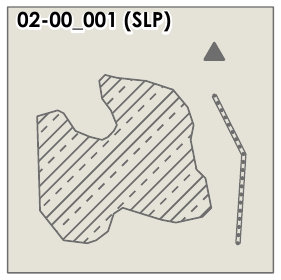 | SVG | aucune | ||
surf. PSC-S_02-00_110lin. PSC-L_02-00_110pct. alternatifPSC-P_02-00_110 | Limitations de la constructibilité pour des raisons environnementales, de risques, d’intérêt général : INONDATION |  | SVG | aucune | ||
surf. PSC-S_02-00_120lin. PSC-L_02-00_120pct. alternatifPSC-P_02-00_120 | Limitations de la constructibilité pour des raisons environnementales, de risques, d’intérêt général : MOUVEMENT TERRAIN | 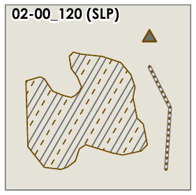 | SVG | aucune | ||
surf. PSC-S_02-00_140lin. PSC-L_02-00_140pct. alternatifPSC-P_02-00_140 | Limitations de la constructibilité pour des raisons environnementales, de risques, d’intérêt général : AVALANCHE |  | SVG | aucune | ||
surf. PSC-S_02-00_160lin. PSC-L_02-00_160pct. alternatifPSC-P_02-00_160 | Limitations de la constructibilité pour des raisons environnementales, de risques, d’intérêt général : FEU |  | SVG | aucune | ||
surf. PSC-S_02-00_200lin. PSC-L_02-00_200pct. alternatifPSC-P_02-00_200 | Limitations de la constructibilité pour des raisons environnementales, de risques, d’intérêt général : TECHNOLOGIQUE | 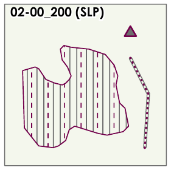 | SVG | aucune | ||
surf. PSC-S_02-01_001lin. PSC-L_02-01_001pct. PSC-P_02-01_001surf. PSC-S_02-01_000transp.lin. PSC-L_02-01_000transp.pct. symbolePSC-P_02-01_000transp. | Secteur avec interdiction de constructibilité pour des raisons environnementales, de risques, d’intérêt général |  | SVG | aucune | ||
surf. PSC-S_02-01_110lin. PSC-L_02-01_110pct. alternatifPSC-P_02-01_110 | Secteur avec interdiction de constructibilité pour des raisons environnementales, de risques, d’intérêt général : INONDATION |  | SVG | aucune | ||
surf. PSC-S_02-01_120lin. PSC-L_02-01_120pct. alternatifPSC-P_02-01_120 | Secteur avec interdiction de constructibilité pour des raisons environnementales, de risques, d’intérêt général : MOUVEMENT TERRAIN |  | SVG | aucune | ||
surf. PSC-S_02-01_140lin. PSC-L_02-01_140pct. alternatifPSC-P_02-01_140 | Secteur avec interdiction de constructibilité pour des raisons environnementales, de risques, d’intérêt général : AVALANCHE | 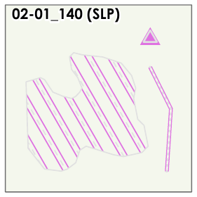 | SVG | aucune | ||
surf. PSC-S_02-01_160lin. PSC-L_02-01_160pct. alternatifPSC-P_02-01_160 | Secteur avec interdiction de constructibilité pour des raisons environnementales, de risques, d’intérêt général : FEU |  | SVG | aucune | ||
surf. PSC-S_02-01_200lin. PSC-L_02-01_200pct. alternatifPSC-P_02-01_200 | Secteur avec interdiction de constructibilité pour des raisons environnementales, de risques, d’intérêt général : TECHNOLOGIQUE |  | SVG | aucune | ||
surf. PSC-S_02-02_001lin. PSC-L_02-02_001pct. PSC-P_02-02_001surf. PSC-S_02-02_000transp.lin. PSC-L_02-02_000transp.pct. symbolePSC-P_02-02_000transp. | Secteur avec conditions spéciales de constructibilité pour des raisons environnementales, de risques, d’intérêt général | 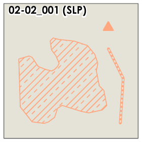 | SVG | aucune | ||
surf. PSC-S_02-02_110lin. PSC-L_02-02_110pct. alternatifPSC-P_02-02_110 | Secteur avec conditions spéciales de constructibilité pour des raisons environnementales, de risques, d’intérêt général : INONDATION |  | SVG | aucune | ||
surf. PSC-S_02-02_120lin. PSC-L_02-02_120pct. alternatifPSC-P_02-02_120 | Secteur avec conditions spéciales de constructibilité pour des raisons environnementales, de risques, d’intérêt général : MOUVEMENT TERRAIN | 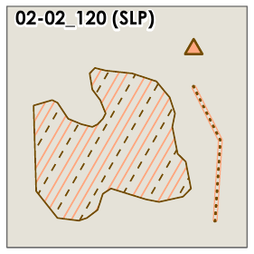 | SVG | aucune | ||
surf. PSC-S_02-02_140lin. PSC-L_02-02_140pct. alternatifPSC-P_02-02_140 | Secteur avec conditions spéciales de constructibilité pour des raisons environnementales, de risques, d’intérêt général : AVALANCHE |  | SVG | aucune | ||
surf. PSC-S_02-02_160lin. PSC-L_02-02_160pct. alternatifPSC-P_02-02_160 | Secteur avec conditions spéciales de constructibilité pour des raisons environnementales, de risques, d’intérêt général : FEU |  | SVG | aucune | ||
surf. PSC-S_02-02_200lin. PSC-L_02-02_200pct. alternatifPSC-P_02-02_200 | Secteur avec conditions spéciales de constructibilité pour des raisons environnementales, de risques, d’intérêt général : TECHNOLOGIQUE |  | SVG | aucune | ||
surf. PSC-S_03-00_001pct. PSC-P_03-00_001surf. PSC-S_03-00_000transp.pct. symbolePSC-P_03-00_000transp. | Secteur avec disposition de reconstruction / démolition |  | SVG ×2 | aucune | ||
surf. PSC-S_03-01_001pct. PSC-P_03-01_001surf. PSC-S_03-01_000transp.pct. sous-codePSC-P_03-01_000transp. | [réservé aux cartes communales] Secteur dans lequel la reconstruction à l'identique d'un bâtiment détruit par un sinistre n'est pas autorisée | | SVG ×2 | aucune | ||
surf. PSC-S_03-02_001pct. PSC-P_03-02_001surf. PSC-S_03-02_000transp.pct. sous-codePSC-P_03-02_000transp. | Interdiction de restauration de bâtiment dont il reste l’essentiel des murs porteurs | | SVG ×2 | aucune | ||
surf. PSC-S_03-03_001pct. PSC-P_03-03_001surf. PSC-S_03-03_000transp.pct. sous-codePSC-P_03-03_000transp. | Interdiction de reconstruction à l'identique | | SVG ×2 | aucune | ||
surf. PSC-S_04-00_001surf. symbolePSC-S_04-00_000transp. | Périmètre issu des PDU sur obligation de stationnement |  | aucune | |||
surf. PSC-S_05-00_001lin. PSC-L_05-00_001pct. PSC-P_05-00_001surf. PSC-S_05-00_000transp.lin. PSC-L_05-00_000transp.pct. symbolePSC-P_05-00_000transp. | Emplacement réservé : Remarque : sauf lot de données antérieurs au standard v2017, utiliser impérativement les sous-codes suivants |  | SVG | aucune | ||
surf. alternatifPSC-S_05-00_002 | Emplacement réservé : Remarque : sauf lot de données antérieurs au standard v2017, utiliser impérativement les sous-codes suivants |  | SVG | aucune | ||
surf. PSC-S_05-01_001lin. PSC-L_05-01_001pct. PSC-P_05-01_001surf. PSC-S_05-01_000transp.lin. PSC-L_05-01_000transp.pct. symbolePSC-P_05-01_000transp. | Emplacement réservé aux voies publiques | 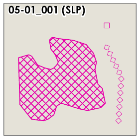 | SVG | aucune | ||
surf. alternatifPSC-S_05-01_002 | Emplacement réservé aux voies publiques |  | SVG | aucune | ||
surf. PSC-S_05-02_001lin. PSC-L_05-02_001pct. PSC-P_05-02_001surf. PSC-S_05-02_000transp.lin. PSC-L_05-02_000transp.pct. symbolePSC-P_05-02_000transp. | Emplacement réservé aux ouvrages publics | 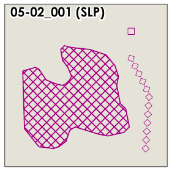 | SVG | aucune | ||
surf. alternatifPSC-S_05-02_002 | Emplacement réservé aux ouvrages publics | 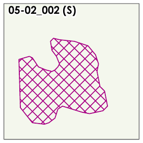 | SVG | aucune | ||
surf. PSC-S_05-03_001lin. PSC-L_05-03_001pct. PSC-P_05-03_001surf. PSC-S_05-03_000transp.lin. PSC-L_05-03_000transp.pct. symbolePSC-P_05-03_000transp. | Emplacement réservé aux installations d’intérêt général |  | SVG | aucune | ||
surf. alternatifPSC-S_05-03_002 | Emplacement réservé aux installations d’intérêt général |  | SVG | aucune | ||
surf. PSC-S_05-04_001lin. PSC-L_05-04_001pct. PSC-P_05-04_001surf. PSC-S_05-04_000transp.lin. PSC-L_05-04_000transp.pct. symbolePSC-P_05-04_000transp. | Emplacement réservé aux espaces verts/continuités écologiques |  | SVG | aucune | ||
surf. alternatifPSC-S_05-04_002 | Emplacement réservé aux espaces verts/continuités écologiques |  | SVG | aucune | ||
surf. PSC-S_05-05_001lin. PSC-L_05-05_001pct. PSC-P_05-05_001surf. PSC-S_05-05_000transp.lin. PSC-L_05-05_000transp.pct. symbolePSC-P_05-05_000transp. | Emplacement réservé logement social/mixité sociale |  | SVG | aucune | ||
surf. alternatifPSC-S_05-05_002 | Emplacement réservé logement social/mixité sociale | 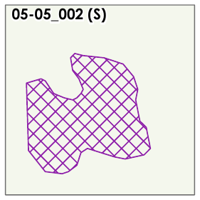 | SVG | aucune | ||
surf. PSC-S_05-06_001lin. PSC-L_05-06_001pct. PSC-P_05-06_001surf. PSC-S_05-06_000transp.lin. PSC-L_05-06_000transp.pct. symbolePSC-P_05-06_000transp. | Servitude de localisation des voies, ouvrages publics, installations d’intérêt général et espaces verts en zone U ou AU | 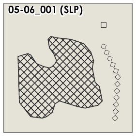 | SVG | aucune | ||
surf. alternatifPSC-S_05-06_002 | Servitude de localisation des voies, ouvrages publics, installations d’intérêt général et espaces verts en zone U ou AU |  | SVG | aucune | ||
surf. PSC-S_05-07_001surf. symbolePSC-S_05-07_000transp. | Secteur de projet en attente d’un projet d’aménagement global |  | SVG | aucune | ||
surf. PSC-S_05-08_001lin. PSC-L_05-08_001pct. PSC-P_05-08_001surf. PSC-S_05-08_000transp.lin. PSC-L_05-08_000transp.pct. symbolePSC-P_05-08_000transp. | Emplacements réservés à la relocalisation d’équipements, de constructions et d’installations exposés au recul du trait de côte |  | SVG | aucune | ||
surf. alternatifPSC-S_05-08_002 | Emplacements réservés à la relocalisation d’équipements, de constructions et d’installations exposés au recul du trait de côte | 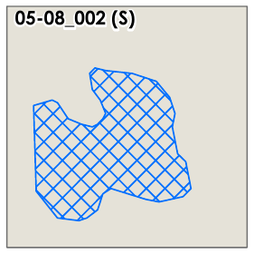 | SVG | aucune | ||
surf. PSC-S_07-00_001lin. PSC-L_07-00_001pct. PSC-P_07-00_001surf. PSC-S_07-00_000transp.lin. PSC-L_07-00_000transp.pct. symbolePSC-P_07-00_000transp. | Patrimoine bâti, paysager ou éléments de paysages à protéger pour des motifs d'ordre culturel, historique, architectural ou écologique |  | SVG ×2 | aucune | ||
surf. PSC-S_07-01_001lin. PSC-L_07-01_001pct. PSC-P_07-01_001surf. PSC-S_07-01_000transp.lin. PSC-L_07-01_000transp.pct. symbolePSC-P_07-01_000transp. | Patrimoine bâti à protéger pour des motifs d'ordre culturel, historique, architectural |  | SVG ×2 | aucune | ||
surf. PSC-S_07-02_001lin. PSC-L_07-02_001pct. PSC-P_07-02_001surf. PSC-S_07-02_000transp.lin. PSC-L_07-02_000transp.pct. symbolePSC-P_07-02_000transp. | Patrimoine paysager à protéger pour des motifs d'ordre culturel, historique, architectural | 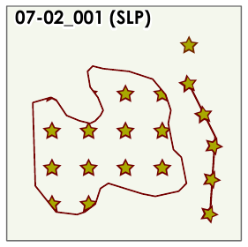 | SVG ×2 | aucune | ||
surf. PSC-S_07-03_001lin. PSC-L_07-03_001pct. PSC-P_07-03_001surf. PSC-S_07-03_000transp.lin. PSC-L_07-03_000transp.pct. symbolePSC-P_07-03_000transp. | Patrimoine paysager correspondant à un espace boisé à protéger pour des motifs d'ordre culturel, historique, architectural |  | SVG ×2 | aucune | ||
surf. PSC-S_07-04_001lin. PSC-L_07-04_001pct. PSC-P_07-04_001surf. PSC-S_07-04_000transp.lin. PSC-L_07-04_000transp.pct. symbolePSC-P_07-04_000transp. | Éléments de paysage, (sites et secteurs) à préserver pour des motifs d'ordre écologique | 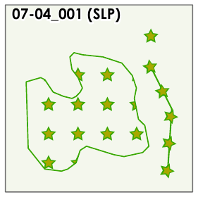 | SVG ×2 | aucune | ||
surf. PSC-S_07-05_001lin. PSC-L_07-05_001pct. PSC-P_07-05_001surf. PSC-S_07-05_000transp.lin. PSC-L_07-05_000transp.pct. symbolePSC-P_07-05_000transp. | Éléments de paysage correspondant à un espace boisé, (sites et secteurs) à préserver pour des motifs d'ordre écologique | 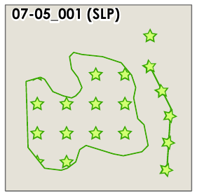 | SVG ×2 | aucune | ||
surf. PSC-S_08-00_001surf. symbolePSC-S_08-00_000transp. | Terrain cultivé ou non bâti à protéger en zone urbaine | 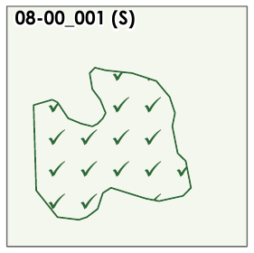 | SVG | aucune | ||
surf. PSC-S_13-00_001surf. symbolePSC-S_13-00_000transp. | Zone à aménager en vue de la pratique du ski | 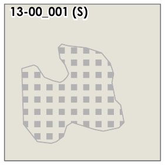 | SVG | aucune | ||
surf. PSC-S_14-00_001surf. symbolePSC-S_14-00_000transp. | Secteur de plan de masse | 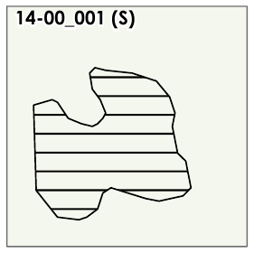 | SVG | aucune | ||
surf. PSC-S_15-00_001lin. PSC-L_15-00_001pct. PSC-P_15-00_001surf. PSC-S_15-00_000transp.lin. PSC-L_15-00_000transp.pct. symbolePSC-P_15-00_000transp. | Règles d’implantation des constructions |  | SVG ×3 | aucune | ||
surf. PSC-S_15-01_001lin. PSC-L_15-01_001pct. PSC-P_15-01_001surf. PSC-S_15-01_000transp.lin. PSC-L_15-01_000transp.pct. sous-codePSC-P_15-01_000transp. | Implantation des constructions par rapport aux voies et aux emprises publiques | | SVG ×3 | aucune | ||
surf. PSC-S_15-02_001lin. PSC-L_15-02_001pct. PSC-P_15-02_001surf. PSC-S_15-02_000transp.lin. PSC-L_15-02_000transp.pct. sous-codePSC-P_15-02_000transp. | Implantation des constructions par rapport aux limites séparatives latérales | | SVG ×3 | aucune | ||
surf. PSC-S_15-03_001lin. PSC-L_15-03_001pct. PSC-P_15-03_001surf. PSC-S_15-03_000transp.lin. PSC-L_15-03_000transp.pct. sous-codePSC-P_15-03_000transp. | Implantation des constructions par rapport aux limites des fonds de parcelles | | SVG ×3 | aucune | ||
surf. PSC-S_15-98_001lin. PSC-L_15-98_001pct. PSC-P_15-98_001surf. PSC-S_15-98_000transp.lin. PSC-L_15-98_000transp.pct. sous-codePSC-P_15-98_000transp. | Implantation alternative des constructions | | SVG ×3 | aucune | ||
surf. PSC-S_16-00_001pct. PSC-P_16-00_001surf. PSC-S_16-00_000transp.pct. symbolePSC-P_16-00_000transp. | Constructions et installations nécessaires à des équipements collectifs en zone A ou N |  | SVG | aucune | ||
surf. PSC-S_16-01_001pct. PSC-P_16-01_001surf. PSC-S_16-01_000transp.pct. sous-codePSC-P_16-01_000transp. | Bâtiment susceptible de changer de destination en zone A ou N | | SVG | aucune | ||
surf. PSC-S_16-02_001pct. PSC-P_16-02_001surf. PSC-S_16-02_000transp.pct. sous-codePSC-P_16-02_000transp. | Bâtiments d’habitation existants pouvant faire l’objet d’extensions ou d’annexes en zone A ou N | | SVG | aucune | ||
surf. PSC-S_16-03_001pct. PSC-P_16-03_001surf. PSC-S_16-03_000transp.pct. symbolePSC-P_16-03_000transp. | Secteur de taille et de capacité d’accueil limitées (STECAL) en zone A ou N | 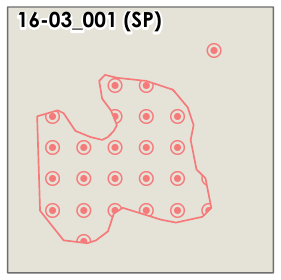 | SVG | aucune | ||
surf. PSC-S_16-04_001pct. PSC-P_16-04_001surf. PSC-S_16-04_000transp.pct. sous-codePSC-P_16-04_000transp. | Constructions et installations nécessaires à l’activité agricole en zone A ou N | | SVG | aucune | ||
surf. PSC-S_16-05_001pct. PSC-P_16-05_001surf. PSC-S_16-05_000transp.pct. sous-codePSC-P_16-05_000transp. | Diversification de l'activité agricole : transformation, conditionnement et ventes de produits agricoles (activités liées au tourisme exclues) | | SVG | aucune | ||
surf. PSC-S_17-00_001surf. symbolePSC-S_17-00_000transp. | Secteur à programme de logements mixité sociale en zone U et AU | 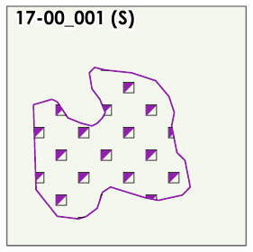 | SVG | aucune | ||
surf. PSC-S_18-00_001surf. symbolePSC-S_18-00_000transp. | Périmètre comportant des orientations d’aménagement et de programmation (OAP) | SVG | aucune | |||
surf. PSC-S_18-01_001surf. sous-codePSC-S_18-01_000transp. | OAP de projet (sans règlement) | SVG | aucune | |||
surf. PSC-S_18-02_001surf. sous-codePSC-S_18-02_000transp. | OAP entrées de ville | SVG | aucune | |||
surf. PSC-S_18-03_001surf. sous-codePSC-S_18-03_000transp. | OAP relatives à la réhabilitation, la restructuration, la mise en valeur ou l’aménagement | SVG | aucune | |||
surf. PSC-S_18-04_001surf. sous-codePSC-S_18-04_000transp. | OAP d’adaptation des périmètres de transports collectifs | SVG | aucune | |||
surf. PSC-S_18-05_001surf. sous-codePSC-S_18-05_000transp. | OAP patrimoniales, architecturales et écologiques | SVG | aucune | |||
surf. PSC-S_18-06_001surf. sous-codePSC-S_18-06_000transp. | OAP relatives à l’habitat | SVG | aucune | |||
surf. PSC-S_18-07_001surf. sous-codePSC-S_18-07_000transp. | OAP comprenant des dispositions relatives à l'équipement commercial et artisanal | SVG | aucune | |||
surf. PSC-S_18-08_001surf. sous-codePSC-S_18-08_000transp. | OAP relatives aux transports et aux déplacements | SVG | aucune | |||
surf. PSC-S_18-09_001surf. sous-codePSC-S_18-09_000transp. | OAP relatives aux espaces publics en zone d’aménagement concerté | SVG | aucune | |||
surf. PSC-S_18-10_001surf. sous-codePSC-S_18-10_000transp. | OAP relatives aux ouvrages publics, installations d’intérêt général et espaces verts en zone d’aménagement concerté | SVG | aucune | |||
surf. PSC-S_18-11_001surf. sous-codePSC-S_18-11_000transp. | OAP valant création de zone d’aménagement concerté | SVG | aucune | |||
surf. PSC-S_18-12_001surf. sous-codePSC-S_18-12_000transp. | OAP secteurs de renaturation | SVG | aucune | |||
surf. PSC-S_18-13_001surf. sous-codePSC-S_18-13_000transp. | OAP relatives à la protection des franges urbaines et rurales | SVG | aucune | |||
surf. PSC-S_18-14_001surf. sous-codePSC-S_18-14_000transp. | OAP recul du trait de côte | SVG | aucune | |||
surf. PSC-S_18-15_001surf. sous-codePSC-S_18-15_000transp. | OAP trames vertes et bleues | SVG | aucune | |||
surf. PSC-S_18-16_001surf. sous-codePSC-S_18-16_000transp. | OAP zone d’accélération de la production d’énergies renouvelables | SVG | aucune | |||
surf. PSC-S_18-17_001surf. sous-codePSC-S_18-17_000transp. | OAP renouvellement urbain associé à une opération de transformation urbaine | SVG | aucune | |||
surf. PSC-S_19-00_001surf. symbolePSC-S_19-00_000transp. | Secteur protégé en raison de la richesse du sol et du sous-sol | 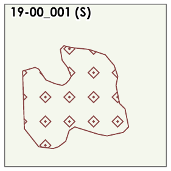 | SVG | aucune | ||
surf. PSC-S_20-00_001surf. symbolePSC-S_20-00_000transp. | Secteur à transfert de constructibilité en zone N | 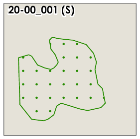 | SVG | aucune | ||
surf. PSC-S_22-00_001lin. PSC-L_22-00_001pct. PSC-P_22-00_001surf. PSC-S_22-00_000transp.lin. PSC-L_22-00_000transp.pct. symbolePSC-P_22-00_000transp. | Diversité commerciale à protéger ou à développer | 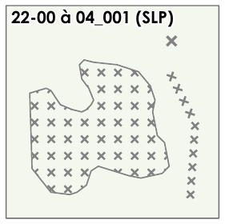 | SVG ×2 | aucune | ||
surf. PSC-S_22-01_001lin. PSC-L_22-01_001pct. PSC-P_22-01_001surf. PSC-S_22-01_000transp.lin. PSC-L_22-01_000transp.pct. sous-codePSC-P_22-01_000transp. | Diversité commerciale à protéger | SVG ×2 | aucune | |||
surf. PSC-S_22-02_001lin. PSC-L_22-02_001pct. PSC-P_22-02_001surf. PSC-S_22-02_000transp.lin. PSC-L_22-02_000transp.pct. sous-codePSC-P_22-02_000transp. | Diversité commerciale à développer | SVG ×2 | aucune | |||
surf. PSC-S_22-03_001lin. PSC-L_22-03_001pct. PSC-P_22-03_001surf. PSC-S_22-03_000transp.lin. PSC-L_22-03_000transp.pct. sous-codePSC-P_22-03_000transp. | Linéaire commercial protégé | SVG ×2 | aucune | |||
surf. PSC-S_22-04_001lin. PSC-L_22-04_001pct. PSC-P_22-04_001surf. PSC-S_22-04_000transp.lin. PSC-L_22-04_000transp.pct. sous-codePSC-P_22-04_000transp. | Linéaire commercial protégé renforcé | SVG ×2 | aucune | |||
surf. PSC-S_23-00_001surf. symbolePSC-S_23-00_000transp. | Secteur avec taille minimale des logements en zone U et AU | 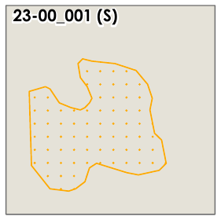 | SVG | aucune | ||
surf. PSC-S_24-00_001lin. PSC-L_24-00_001surf. PSC-S_24-00_000transp.lin. symbolePSC-L_24-00_000transp. | Voies, chemins, transport public à conserver et à créer |  | SVG ×2 | aucune | ||
surf. PSC-S_24-01_001lin. PSC-L_24-01_001surf. PSC-S_24-01_000transp.lin. sous-codePSC-L_24-01_000transp. | Voies de circulation à créer, modifier ou conserver | | SVG ×2 | aucune | ||
surf. PSC-S_24-02_001lin. PSC-L_24-02_001surf. PSC-S_24-02_000transp.lin. sous-codePSC-L_24-02_000transp. | Voies de circulation à modifier | | SVG ×2 | aucune | ||
surf. PSC-S_24-03_001lin. PSC-L_24-03_001surf. PSC-S_24-03_000transp.lin. sous-codePSC-L_24-03_000transp. | Voies de circulation à créer | | SVG ×2 | aucune | ||
surf. PSC-S_24-04_001lin. PSC-L_24-04_001surf. PSC-S_24-04_000transp.lin. sous-codePSC-L_24-04_000transp. | Voies de circulation à conserver | | SVG ×2 | aucune | ||
surf. PSC-S_25-00_001lin. PSC-L_25-00_001pct. PSC-P_25-00_001surf. PSC-S_25-00_000transp.lin. PSC-L_25-00_000transp.pct. symbolePSC-P_25-00_000transp. | Eléments de continuité écologique et trame verte et bleue | 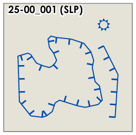 | SVG ×2 | aucune | ||
surf. PSC-S_26-00_001surf. symbolePSC-S_26-00_000transp. | Secteur de performance énergétique | 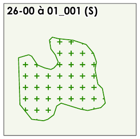 | SVG | aucune | ||
surf. PSC-S_26-01_001surf. sous-codePSC-S_26-01_000transp. | Secteur de performance énergétique renforcé | SVG | aucune | |||
surf. PSC-S_27-00_001surf. symbolePSC-S_27-00_000transp. | Secteur d’aménagement numérique | 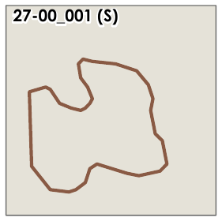 | aucune | |||
surf. PSC-S_28-00_001lin. PSC-L_28-00_001pct. PSC-P_28-00_001surf. PSC-S_28-00_000transp.lin. PSC-L_28-00_000transp.pct. symbolePSC-P_28-00_000transp. | Conditions de desserte | 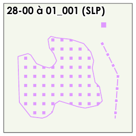 | SVG | aucune | ||
surf. PSC-S_28-01_001lin. PSC-L_28-01_001pct. PSC-P_28-01_001surf. PSC-S_28-01_000transp.lin. PSC-L_28-01_000transp.pct. sous-codePSC-P_28-01_000transp. | Conditions permettant une bonne desserte des terrains par les services publics de collecte des déchets | SVG | aucune | |||
surf. PSC-S_29-00_001surf. symbolePSC-S_29-00_000transp. | Secteur avec densité minimale de construction | SVG | aucune | |||
surf. PSC-S_29-01_001surf. sous-codePSC-S_29-01_000transp. | Secteur avec densité minimale de construction à proximité des transports collectifs | SVG | aucune | |||
surf. PSC-S_29-02_001surf. sous-codePSC-S_29-02_000transp. | Secteur de ZAC avec densité minimale de construction | SVG | aucune | |||
surf. PSC-S_30-00_001surf. symbolePSC-S_30-00_000transp. | Majoration des volumes constructibles |  | SVG | aucune | ||
surf. PSC-S_30-01_001surf. sous-codePSC-S_30-01_000transp. | Majoration des volumes constructibles pour l’habitation | | SVG | aucune | ||
surf. PSC-S_30-02_001surf. sous-codePSC-S_30-02_000transp. | Majoration des volumes constructibles pour les programmes comportant des logements locatifs sociaux | | SVG | aucune | ||
surf. PSC-S_30-03_001surf. sous-codePSC-S_30-03_000transp. | Majoration des volumes constructibles pour exemplarité énergétique ou environnementale | | SVG | aucune | ||
surf. PSC-S_30-04_001surf. sous-codePSC-S_30-04_000transp. | Majoration des volumes constructibles pour les programmes comportant des logements intermédiaires | | SVG | aucune | ||
surf. PSC-S_31-00_001lin. PSC-L_31-00_001pct. PSC-P_31-00_001surf. PSC-S_31-00_000transp.lin. PSC-L_31-00_000transp.pct. symbolePSC-P_31-00_000transp. | Espaces remarquables du littoral | 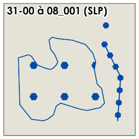 | SVG ×2 | aucune | ||
surf. PSC-S_31-01_001lin. PSC-L_31-01_001pct. PSC-P_31-01_001surf. PSC-S_31-01_000transp.lin. PSC-L_31-01_000transp.pct. sous-codePSC-P_31-01_000transp. | Dunes, landes côtières, plages et lidos, estrans, falaises et abords | SVG ×2 | aucune | |||
surf. PSC-S_31-02_001lin. PSC-L_31-02_001pct. PSC-P_31-02_001surf. PSC-S_31-02_000transp.lin. PSC-L_31-02_000transp.pct. sous-codePSC-P_31-02_000transp. | Forêts et zones boisées proches du rivage de la mer et des plans d’eau intérieurs d’une superficie supérieure à 1 000 hectares | SVG ×2 | aucune | |||
surf. PSC-S_31-03_001lin. PSC-L_31-03_001pct. PSC-P_31-03_001surf. PSC-S_31-03_000transp.lin. PSC-L_31-03_000transp.pct. sous-codePSC-P_31-03_000transp. | Ilots inhabités | SVG ×2 | aucune | |||
surf. PSC-S_31-04_001lin. PSC-L_31-04_001pct. PSC-P_31-04_001surf. PSC-S_31-04_000transp.lin. PSC-L_31-04_000transp.pct. sous-codePSC-P_31-04_000transp. | Parties naturelles des estuaires, des rias ou abers et des caps | SVG ×2 | aucune | |||
surf. PSC-S_31-05_001lin. PSC-L_31-05_001pct. PSC-P_31-05_001surf. PSC-S_31-05_000transp.lin. PSC-L_31-05_000transp.pct. sous-codePSC-P_31-05_000transp. | Marais, vasières, tourbières, plans d'eau, les zones humides et milieux temporairement immergés | SVG ×2 | aucune | |||
surf. PSC-S_31-06_001lin. PSC-L_31-06_001pct. PSC-P_31-06_001surf. PSC-S_31-06_000transp.lin. PSC-L_31-06_000transp.pct. sous-codePSC-P_31-06_000transp. | Milieux abritant des concentrations naturelles d'espèces animales ou végétales | SVG ×2 | aucune | |||
surf. PSC-S_31-07_001lin. PSC-L_31-07_001pct. PSC-P_31-07_001surf. PSC-S_31-07_000transp.lin. PSC-L_31-07_000transp.pct. sous-codePSC-P_31-07_000transp. | Parties naturelles des sites inscrits ou classés | SVG ×2 | aucune | |||
surf. PSC-S_31-08_001lin. PSC-L_31-08_001pct. PSC-P_31-08_001surf. PSC-S_31-08_000transp.lin. PSC-L_31-08_000transp.pct. sous-codePSC-P_31-08_000transp. | Formations géologiques | SVG ×2 | aucune | |||
surf. PSC-S_32-00_001surf. symbolePSC-S_32-00_000transp. | Exclusion protection de plans d’eau de faible importance |  | SVG | aucune | ||
surf. PSC-S_33-00_001lin. PSC-L_33-00_001surf. PSC-S_33-00_000transp.lin. symbolePSC-L_33-00_000transp. | Secteur de dérogation aux protections des rives des plans d'eau en zone de montagne | 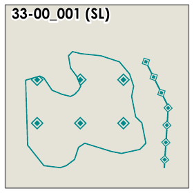 | SVG ×2 | aucune | ||
surf. PSC-S_34-00_001lin. PSC-L_34-00_001pct. PSC-P_34-00_001surf. PSC-S_34-00_000transp.lin. PSC-L_34-00_000transp.pct. symbolePSC-P_34-00_000transp. | Espaces, paysage et milieux caractéristiques du patrimoine naturel et culturel montagnard à préserver | 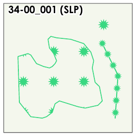 | SVG ×2 | aucune | ||
surf. PSC-S_35-00_001lin. PSC-L_35-00_001surf. PSC-S_35-00_000transp.lin. symbolePSC-L_35-00_000transp. | Terres nécessaires au maintien et au développement des activités agricoles, pastorales et forestières à préserver |  | SVG ×2 | aucune | ||
surf. PSC-S_36-00_001surf. symbolePSC-S_36-00_000transp. | Mixité des destinations ou sous-destinations |  | SVG | aucune | ||
surf. PSC-S_37-00_001lin. PSC-L_37-00_001surf. PSC-S_37-00_000transp.lin. symbolePSC-L_37-00_000transp. | Règles différenciées entre le rez-de-chaussée et les étages supérieurs des constructions |  | SVG ×3 | aucune | ||
surf. PSC-S_37-01_001lin. PSC-L_37-01_001surf. PSC-S_37-01_000transp.lin. sous-codePSC-L_37-01_000transp. | Règles différenciées pour le rez-de-chaussée en raison des risques inondations | | SVG ×3 | aucune | ||
surf. PSC-S_37-02_001lin. PSC-L_37-02_001surf. PSC-S_37-02_000transp.lin. sous-codePSC-L_37-02_000transp. | Règles différenciées pour mixité sociale et fonctionnelle | | SVG ×3 | aucune | ||
surf. PSC-S_38-00_001surf. symbolePSC-S_38-00_000transp. | Emprise au sol | 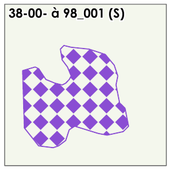 | SVG | aucune | ||
surf. PSC-S_38-01_001surf. sous-codePSC-S_38-01_000transp. | Emprise au sol minimale | SVG | aucune | |||
surf. PSC-S_38-02_001surf. sous-codePSC-S_38-02_000transp. | Emprise au sol maximale | SVG | aucune | |||
surf. PSC-S_38-97_001surf. sous-codePSC-S_38-97_000transp. | Emprise au sol règles qualitatives | SVG | aucune | |||
surf. PSC-S_38-98_001surf. sous-codePSC-S_38-98_000transp. | Emprise au sol règles alternatives | SVG | aucune | |||
surf. PSC-S_39-00_001lin. PSC-L_39-00_001pct. PSC-P_39-00_001surf. PSC-S_39-00_000transp.lin. PSC-L_39-00_000transp.pct. symbolePSC-P_39-00_000transp. | Hauteur |  | SVG ×2 | aucune | ||
surf. PSC-S_39-01_001lin. PSC-L_39-01_001pct. PSC-P_39-01_001surf. PSC-S_39-01_000transp.lin. PSC-L_39-01_000transp.pct. sous-codePSC-P_39-01_000transp. | Hauteur minimale | | SVG ×2 | aucune | ||
surf. PSC-S_39-02_001lin. PSC-L_39-02_001pct. PSC-P_39-02_001surf. PSC-S_39-02_000transp.lin. PSC-L_39-02_000transp.pct. sous-codePSC-P_39-02_000transp. | Hauteur maximale | | SVG ×2 | aucune | ||
surf. PSC-S_39-97_001lin. PSC-L_39-97_001pct. PSC-P_39-97_001surf. PSC-S_39-97_000transp.lin. PSC-L_39-97_000transp.pct. sous-codePSC-P_39-97_000transp. | Hauteur règles qualitatives | | SVG ×2 | aucune | ||
surf. PSC-S_39-98_001lin. PSC-L_39-98_001pct. PSC-P_39-98_001surf. PSC-S_39-98_000transp.lin. PSC-L_39-98_000transp.pct. sous-codePSC-P_39-98_000transp. | Hauteur règles alternatives | | SVG ×2 | aucune | ||
surf. PSC-S_40-00_001lin. PSC-L_40-00_001pct. PSC-P_40-00_001surf. PSC-S_40-00_000transp.lin. PSC-L_40-00_000transp.pct. symbolePSC-P_40-00_000transp. | Volumétrie |  | SVG ×2 | aucune | ||
surf. PSC-S_40-01_001lin. PSC-L_40-01_001pct. PSC-P_40-01_001surf. PSC-S_40-01_000transp.lin. PSC-L_40-01_000transp.pct. sous-codePSC-P_40-01_000transp. | Volumétrie minimale | | SVG ×2 | aucune | ||
surf. PSC-S_40-02_001lin. PSC-L_40-02_001pct. PSC-P_40-02_001surf. PSC-S_40-02_000transp.lin. PSC-L_40-02_000transp.pct. sous-codePSC-P_40-02_000transp. | Volumétrie maximale | | SVG ×2 | aucune | ||
surf. PSC-S_40-97_001lin. PSC-L_40-97_001pct. PSC-P_40-97_001surf. PSC-S_40-97_000transp.lin. PSC-L_40-97_000transp.pct. sous-codePSC-P_40-97_000transp. | Règles volumétriques qualitatives | | SVG ×2 | aucune | ||
surf. PSC-S_40-98_001lin. PSC-L_40-98_001pct. PSC-P_40-98_001surf. PSC-S_40-98_000transp.lin. PSC-L_40-98_000transp.pct. sous-codePSC-P_40-98_000transp. | Règles volumétriques alternatives | | SVG ×2 | aucune | ||
surf. PSC-S_41-00_001lin. PSC-L_41-00_001pct. PSC-P_41-00_001surf. PSC-S_41-00_000transp.lin. PSC-L_41-00_000transp.pct. symbolePSC-P_41-00_000transp. | Aspect extérieur |  | SVG ×2 | aucune | ||
surf. PSC-S_41-01_001lin. PSC-L_41-01_001pct. PSC-P_41-01_001surf. PSC-S_41-01_000transp.lin. PSC-L_41-01_000transp.pct. sous-codePSC-P_41-01_000transp. | Aspect extérieur façades | | SVG ×2 | aucune | ||
surf. PSC-S_41-02_001lin. PSC-L_41-02_001pct. PSC-P_41-02_001surf. PSC-S_41-02_000transp.lin. PSC-L_41-02_000transp.pct. sous-codePSC-P_41-02_000transp. | Aspect extérieur toitures | | SVG ×2 | aucune | ||
surf. PSC-S_41-03_001lin. PSC-L_41-03_001pct. PSC-P_41-03_001surf. PSC-S_41-03_000transp.lin. PSC-L_41-03_000transp.pct. sous-codePSC-P_41-03_000transp. | Aspect extérieur clôtures | | SVG ×2 | aucune | ||
surf. PSC-S_41-98_001lin. PSC-L_41-98_001pct. PSC-P_41-98_001surf. PSC-S_41-98_000transp.lin. PSC-L_41-98_000transp.pct. sous-codePSC-P_41-98_000transp. | Aspect extérieur règles alternatives | | SVG ×2 | aucune | ||
surf. PSC-S_42-00_001surf. symbolePSC-S_42-00_000transp. | Coefficient de biotope par surface |  | SVG | aucune | ||
surf. PSC-S_43-00_001lin. PSC-L_43-00_001pct. PSC-P_43-00_001surf. PSC-S_43-00_000transp.lin. PSC-L_43-00_000transp.pct. symbolePSC-P_43-00_000transp. | Réalisation d’espaces libres, plantations, aires de jeux et de loisir | 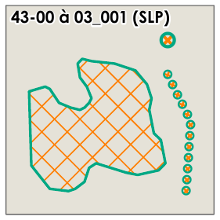 | SVG ×4 | aucune | ||
surf. PSC-S_43-01_001lin. PSC-L_43-01_001pct. PSC-P_43-01_001surf. PSC-S_43-01_000transp.lin. PSC-L_43-01_000transp.pct. sous-codePSC-P_43-01_000transp. | Réalisation d’espaces libres, | SVG ×4 | aucune | |||
surf. PSC-S_43-02_001lin. PSC-L_43-02_001pct. PSC-P_43-02_001surf. PSC-S_43-02_000transp.lin. PSC-L_43-02_000transp.pct. sous-codePSC-P_43-02_000transp. | Réalisation d’aires de jeux et de loisirs | SVG ×4 | aucune | |||
surf. PSC-S_43-03_001lin. PSC-L_43-03_001pct. PSC-P_43-03_001surf. PSC-S_43-03_000transp.lin. PSC-L_43-03_000transp.pct. sous-codePSC-P_43-03_000transp. | Réglementation des plantations | SVG ×4 | aucune | |||
surf. PSC-S_44-00_001lin. PSC-L_44-00_001surf. PSC-S_44-00_000transp.lin. symbolePSC-L_44-00_000transp. | Stationnement |  | SVG ×2 | aucune | ||
surf. PSC-S_44-01_001lin. PSC-L_44-01_001surf. PSC-S_44-01_000transp.lin. sous-codePSC-L_44-01_000transp. | Stationnement minimal | | SVG ×2 | aucune | ||
surf. PSC-S_44-02_001lin. PSC-L_44-02_001surf. PSC-S_44-02_000transp.lin. sous-codePSC-L_44-02_000transp. | Stationnement maximal | | SVG ×2 | aucune | ||
surf. PSC-S_44-03_001lin. PSC-L_44-03_001surf. PSC-S_44-03_000transp.lin. sous-codePSC-L_44-03_000transp. | Caractéristiques et type de stationnement | | SVG ×2 | aucune | ||
surf. PSC-S_44-04_001lin. PSC-L_44-04_001surf. PSC-S_44-04_000transp.lin. sous-codePSC-L_44-04_000transp. | Minoration des règles de stationnement | | SVG ×2 | aucune | ||
surf. PSC-S_44-05_001lin. PSC-L_44-05_001surf. PSC-S_44-05_000transp.lin. sous-codePSC-L_44-05_000transp. | Réalisation d’aires de livraisons imposée | | SVG ×2 | aucune | ||
surf. PSC-S_44-98_001lin. PSC-L_44-98_001surf. PSC-S_44-98_000transp.lin. sous-codePSC-L_44-98_000transp. | Stationnement règles alternatives | | SVG ×2 | aucune | ||
surf. PSC-S_45-00_001surf. symbolePSC-S_45-00_000transp. | Secteur de ZAC avec surfaces de plancher déterminées |  | aucune | |||
surf. PSC-S_46-00_001surf. symbolePSC-S_46-00_000transp. | Constructibilité espace boisé antérieur au 20ème siècle |  | SVG | aucune | ||
surf. PSC-S_47-00_001lin. PSC-L_47-00_001pct. PSC-P_47-00_001surf. PSC-S_47-00_000transp.lin. PSC-L_47-00_000transp.pct. symbolePSC-P_47-00_000transp. | Desserte par les réseaux |  | SVG ×2 | aucune | ||
surf. PSC-S_47-01_001lin. PSC-L_47-01_001pct. PSC-P_47-01_001surf. PSC-S_47-01_000transp.lin. PSC-L_47-01_000transp.pct. sous-codePSC-P_47-01_000transp. | Réseaux publics d'eau | | SVG ×2 | aucune | ||
surf. PSC-S_47-02_001lin. PSC-L_47-02_001pct. PSC-P_47-02_001surf. PSC-S_47-02_000transp.lin. PSC-L_47-02_000transp.pct. sous-codePSC-P_47-02_000transp. | Réseaux publics d'électricité | | SVG ×2 | aucune | ||
surf. PSC-S_47-03_001lin. PSC-L_47-03_001pct. PSC-P_47-03_001surf. PSC-S_47-03_000transp.lin. PSC-L_47-03_000transp.pct. sous-codePSC-P_47-03_000transp. | Réseaux publics d'assainissement | | SVG ×2 | aucune | ||
surf. PSC-S_47-04_001lin. PSC-L_47-04_001pct. PSC-P_47-04_001surf. PSC-S_47-04_000transp.lin. PSC-L_47-04_000transp.pct. sous-codePSC-P_47-04_000transp. | Conditions de réalisation d'un assainissement non collectif | | SVG ×2 | aucune | ||
surf. PSC-S_47-05_001lin. PSC-L_47-05_001pct. PSC-P_47-05_001surf. PSC-S_47-05_000transp.lin. PSC-L_47-05_000transp.pct. sous-codePSC-P_47-05_000transp. | Infrastructures et réseaux de communications électroniques | | SVG ×2 | aucune | ||
surf. PSC-S_48-00_001lin. PSC-L_48-00_001pct. PSC-P_48-00_001surf. PSC-S_48-00_000transp.lin. PSC-L_48-00_000transp.pct. symbolePSC-P_48-00_000transp. | Mesures pour limiter l'imperméabilisation des sols |  | SVG ×2 | aucune | ||
surf. PSC-S_48-01_001lin. PSC-L_48-01_001pct. PSC-P_48-01_001surf. PSC-S_48-01_000transp.lin. PSC-L_48-01_000transp.pct. sous-codePSC-P_48-01_000transp. | Installations nécessaires à la gestion des eaux pluviales et du ruissellement | | SVG ×2 | aucune | ||
surf. PSC-S_49-00_001surf. symbolePSC-S_49-00_000transp. | Opération d'ensemble imposée en zone AU | 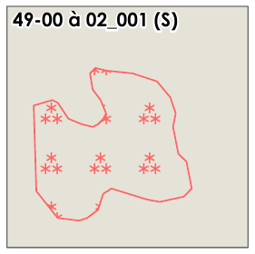 | SVG | aucune | ||
surf. PSC-S_49-01_001surf. sous-codePSC-S_49-01_000transp. | Urbanisation par opération d'ensemble | SVG | aucune | |||
surf. PSC-S_49-02_001surf. sous-codePSC-S_49-02_000transp. | Urbanisation conditionnée à la réalisation des équipements internes à la zone | SVG | aucune | |||
surf. PSC-S_50-00_001lin. PSC-L_50-00_001pct. PSC-P_50-00_001surf. PSC-S_50-00_000transp.lin. PSC-L_50-00_000transp.pct. symbolePSC-P_50-00_000transp. | Interdiction types d’activités, destinations, sous-destinations | 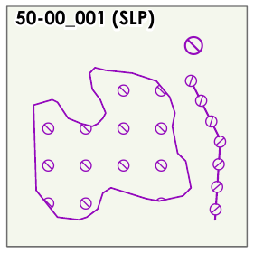 | SVG ×2 | aucune | ||
surf. PSC-S_51-00_001lin. PSC-L_51-00_001pct. PSC-P_51-00_001surf. PSC-S_51-00_000transp.lin. PSC-L_51-00_000transp.pct. symbolePSC-P_51-00_000transp. | Autorisation sous conditions types d’activités, destinations, sous-destinations |  | SVG ×2 | aucune | ||
surf. PSC-S_52-00_001lin. PSC-L_52-00_001pct. PSC-P_52-00_001surf. PSC-S_52-00_000transp.lin. PSC-L_52-00_000transp.pct. symbolePSC-P_52-00_000transp. | Infrastructures et équipements logistiques à préserver ou à développer en zones U et AU | 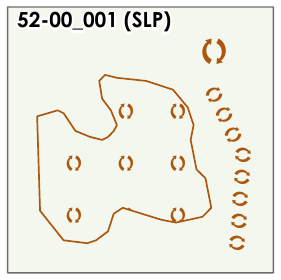 | SVG ×2 | aucune | ||
surf. PSC-S_53-00_001lin. PSC-L_53-00_001surf. PSC-S_53-00_000transp.lin. symbolePSC-L_53-00_000transp. | dérogation à l’article L.111-6 pour l’implantation des constructions le long des grands axes routiers | 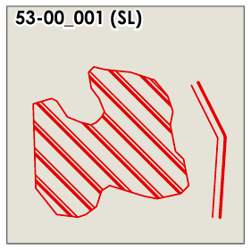 | SVG | aucune | ||
surf. PSC-S_54-01_001surf. symbolePSC-S_54-01_000transp. | Zone exposée au recul du trait de côte à l'horizon de trente ans | SVG | aucune | |||
surf. PSC-S_54-02_001surf. symbolePSC-S_54-02_000transp. | Zone exposée au recul du trait de côte à un horizon compris entre trente et cent ans | 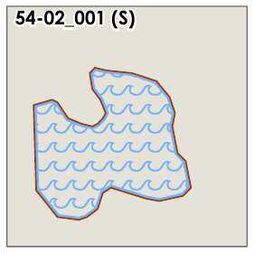 | SVG | aucune | ||
surf. PSC-S_55-01_001surf. symbolePSC-S_55-01_000transp. | Secteur d’implantation d’installations de production d'énergies renouvelables, et leurs ouvrages de raccordement, soumises à conditions | 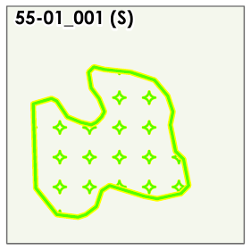 | SVG | aucune | ||
surf. PSC-S_55-02_001surf. symbolePSC-S_55-02_000transp. | Secteur d'exclusion d'installations de prod. d'énergies renouvelables |  | SVG | aucune | ||
surf. PSC-S_56-00_001surf. symbolePSC-S_56-00_000transp. | Secteur dans lequel toutes les constructions nouvelles de logements sont à usage exclusif de résidence principale | 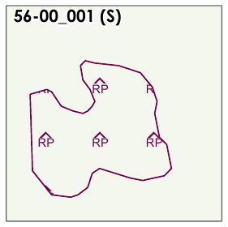 | SVG | aucune | ||
surf. PSC-S_97-00_001surf. symbolePSC-S_97-00_000transp. | Périmètre d’application d’une pièce écrite territorialisée (rapport de présentation, PADD, règlement, règlement graphique, POA) |  | aucune | |||
surf. PSC-S_97-01_001surf. symbolePSC-S_97-01_000transp. | Périmètre couvert par un Plan de secteurs | 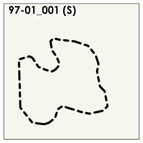 | aucune | |||
surf. PSC-S_99-00_001lin. PSC-L_99-00_001pct. PSC-P_99-00_001surf. PSC-S_99-00_000transp.lin. PSC-L_99-00_000transp.pct. symbolePSC-P_99-00_000transp. | Autre | 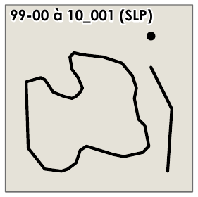 | aucune | |||
surf. PSC-S_99-01_001lin. PSC-L_99-01_001pct. PSC-P_99-01_001surf. PSC-S_99-01_000transp.lin. PSC-L_99-01_000transp.pct. sous-codePSC-P_99-01_000transp. | Autre : affectation des sols et destination des constructions | aucune | ||||
surf. PSC-S_99-02_001lin. PSC-L_99-02_001pct. PSC-P_99-02_001surf. PSC-S_99-02_000transp.lin. PSC-L_99-02_000transp.pct. sous-codePSC-P_99-02_000transp. | Autre : zones naturelles, agricoles ou forestières | aucune | ||||
surf. PSC-S_99-03_001lin. PSC-L_99-03_001pct. PSC-P_99-03_001surf. PSC-S_99-03_000transp.lin. PSC-L_99-03_000transp.pct. sous-codePSC-P_99-03_000transp. | Autre : mixité sociale et fonctionnelle en zones urbaines ou à urbaniser | aucune | ||||
surf. PSC-S_99-04_001lin. PSC-L_99-04_001pct. PSC-P_99-04_001surf. PSC-S_99-04_000transp.lin. PSC-L_99-04_000transp.pct. sous-codePSC-P_99-04_000transp. | Autre : qualité du cadre de vie | aucune | ||||
surf. PSC-S_99-05_001lin. PSC-L_99-05_001pct. PSC-P_99-05_001surf. PSC-S_99-05_000transp.lin. PSC-L_99-05_000transp.pct. sous-codePSC-P_99-05_000transp. | Autre : Qualité urbaine, architecturale, environnementale et paysagère | aucune | ||||
surf. PSC-S_99-06_001lin. PSC-L_99-06_001pct. PSC-P_99-06_001surf. PSC-S_99-06_000transp.lin. PSC-L_99-06_000transp.pct. sous-codePSC-P_99-06_000transp. | Autre : Traitement environnemental et paysager des espaces non bâtis et abords des constructions | aucune | ||||
surf. PSC-S_99-07_001lin. PSC-L_99-07_001pct. PSC-P_99-07_001surf. PSC-S_99-07_000transp.lin. PSC-L_99-07_000transp.pct. sous-codePSC-P_99-07_000transp. | Autre : densité | aucune | ||||
surf. PSC-S_99-08_001lin. PSC-L_99-08_001pct. PSC-P_99-08_001surf. PSC-S_99-08_000transp.lin. PSC-L_99-08_000transp.pct. sous-codePSC-P_99-08_000transp. | Autre : équipements, réseaux et emplacements réservés | aucune | ||||
surf. PSC-S_99-09_001lin. PSC-L_99-09_001pct. PSC-P_99-09_001surf. PSC-S_99-09_000transp.lin. PSC-L_99-09_000transp.pct. sous-codePSC-P_99-09_000transp. | Autre : plan local d’urbanisme tenant lieu de programme local de l’habitat et de plan de déplacements urbains | aucune | ||||
surf. PSC-S_99-10_001lin. PSC-L_99-10_001pct. PSC-P_99-10_001surf. PSC-S_99-10_000transp.lin. PSC-L_99-10_000transp.pct. sous-codePSC-P_99-10_000transp. | Autre : plan local d’urbanisme tenant lieu de plan de déplacements urbains | aucune | ||||
PLU · informations49 fiches1 avec ⚠1 avec remarque40 SVG différents (5 pictos, 35 tuiles de trame) | ||||||
surf. INF-S_02-00_001surf. symboleINF-S_02-00_000transp. | Zone d'aménagement concerté |  | aucune | |||
surf. INF-S_03-00_001surf. symboleINF-S_03-00_000transp. | Zone de préemption dans un espace naturel et sensible. [Attention : information facultative non exigée par la loi] | 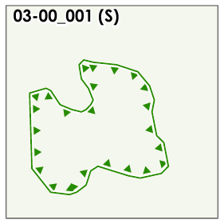 | SVG | aucune | ||
surf. INF-S_04-00_001surf. symboleINF-S_04-00_000transp. | Périmètre de droit de préemption urbain | 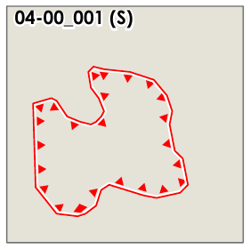 | SVG | aucune | ||
surf. INF-S_04-01_001surf. symboleINF-S_04-01_000transp. | Périmètre de droit de préemption urbain renforcé | 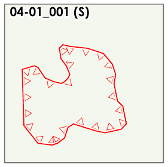 | SVG | aucune | ||
surf. INF-S_05-00_001surf. symboleINF-S_05-00_000transp. | Zone d'aménagement différé |  | SVG | aucune | ||
surf. INF-S_07-00_001surf. symboleINF-S_07-00_000transp. | Périmètre de développement prioritaire économie d'énergie | 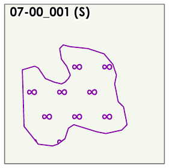 | SVG | aucune | ||
surf. INF-S_08-00_001surf. symboleINF-S_08-00_000transp. | Périmètre forestier : interdiction ou réglementation des plantations (code rural et de la pêche maritime), plantations à réaliser et semis d'essence forestière | 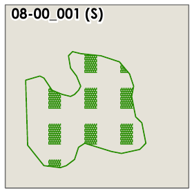 | SVG | aucune | ||
surf. INF-S_09-00_001surf. symboleINF-S_09-00_000transp. | Périmètre minier de concession pour l'exploitation ou le stockage |  | SVG |
| ||
surf. INF-S_10-00_001surf. symboleINF-S_10-00_000transp. | Zone de recherche et d'exploitation de carrière |  | SVG ×2 | aucune | ||
surf. INF-S_11-00_001surf. symboleINF-S_11-00_000transp. | Périmètre des zones délimitées - divisions foncières soumises à déclaration préalable |  | SVG | aucune | ||
surf. INF-S_12-00_001surf. symboleINF-S_12-00_000transp. | Périmètre de sursis à statuer | 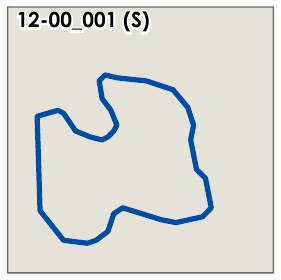 | aucune | |||
surf. INF-S_13-00_001surf. symboleINF-S_13-00_000transp. | Secteur de programme d'aménagement d'ensemble |  | SVG | aucune | ||
surf. INF-S_14-00_001surf. symboleINF-S_14-00_000transp. | Périmètre de voisinage d'infrastructure de transport terrestre (secteur affecté par le bruit) | 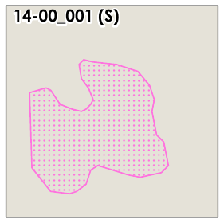 | SVG | aucune | ||
surf. INF-S_16-00_001lin. INF-L_16-00_001pct. INF-P_16-00_001surf. INF-S_16-00_000transp.lin. INF-L_16-00_000transp.pct. symboleINF-P_16-00_000transp. | Site archéologique [Attention : information facultative non exigée par la loi] |  | SVG | aucune | ||
surf. INF-S_17-00_001surf. symboleINF-S_17-00_000transp. | Zone à risque d'exposition au plomb | 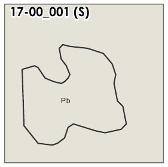 | SVG | aucune | ||
surf. INF-S_19-01_001lin. INF-L_19-01_001pct. INF-P_19-01_001surf. INF-S_19-01_000transp.lin. INF-L_19-01_000transp.pct. symboleINF-P_19-01_000transp. | Zone d'assainissement collectif/non collectif, eaux usées/eaux pluviales, schéma de réseaux eau et assainissement, systèmes d'élimination des déchets |  | SVG ×2 | aucune | ||
surf. INF-S_19-02_001lin. INF-L_19-02_001pct. INF-P_19-02_001surf. INF-S_19-02_000transp.lin. INF-L_19-02_000transp.pct. sous-codeINF-P_19-02_000transp. | Emplacements traitement eaux et déchets | | SVG ×2 | aucune | ||
surf. INF-S_20-00_001surf. symboleINF-S_20-00_000transp. | Règlement local de publicité | SVG | aucune | |||
surf. INF-S_21-00_001surf. symboleINF-S_21-00_000transp. | Projet de plan de prévention des risques | SVG | aucune | |||
surf. INF-S_22-00_001lin. INF-L_22-00_001surf. INF-S_22-00_000transp.lin. symboleINF-L_22-00_000transp. | Protection des rives des plans d'eau en zone de montagne |  | SVG ×2 | aucune | ||
surf. INF-S_23-00_001surf. symboleINF-S_23-00_000transp. | Arrêté du préfet coordonnateur de massif |  | aucune | |||
surf. INF-S_25-00_001surf. symboleINF-S_25-00_000transp. | Périmètre de protection des espaces agricoles et naturels périurbain | SVG | aucune | |||
surf. INF-S_27-00_001surf. symboleINF-S_27-00_000transp. | Plan d'exposition au bruit des aérodromes | SVG | aucune | |||
surf. INF-S_30-00_001surf. symboleINF-S_30-00_000transp. | Périmètre projet urbain partenarial | SVG | aucune | |||
surf. INF-S_31-00_001surf. symboleINF-S_31-00_000transp. | Périmètres patrimoniaux d’exclusion des matériaux et énergies renouvelables pris par délibération |  | aucune | |||
surf. INF-S_32-00_001surf. symboleINF-S_32-00_000transp. | Secteur de taxe d'aménagement | SVG | aucune | |||
surf. INF-S_33-00_001surf. symboleINF-S_33-00_000transp. | Droit de préemption commercial. [Attention : information facultative non exigée par la loi] | SVG | aucune | |||
surf. INF-S_34-00_001surf. symboleINF-S_34-00_000transp. | Périmètre d'opération d'intérêt national. [Attention : information facultative non exigée par la loi] | SVG | aucune | |||
surf. INF-S_35-00_001surf. symboleINF-S_35-00_000transp. | Périmètre de secteur affecté par un seuil minimal de densité |  | SVG | aucune | ||
surf. INF-S_36-00_001surf. symboleINF-S_36-00_000transp. | Schémas d'aménagement de plage |  | SVG | aucune | ||
surf. INF-S_37-00_001surf. symboleINF-S_37-00_000transp. | Bois ou forêts relevant du régime forestier | SVG | aucune | |||
surf. INF-S_38-00_001surf. symboleINF-S_38-00_000transp. | Secteurs d'information sur les sols | SVG | aucune | |||
surf. INF-S_39-00_001surf. symboleINF-S_39-00_000transp. | Périmètres de projets AFUP | SVG | aucune | |||
surf. INF-S_40-01_001surf. symboleINF-S_40-01_000transp. | Périmètre d’un bien inscrit au patrimoine mondial | SVG | aucune | |||
surf. INF-S_40-02_001surf. symboleINF-S_40-02_000transp. | Zone tampon d’un bien inscrit au patrimoine mondial |  | SVG | aucune | ||
surf. INF-S_41-00_001surf. symboleINF-S_41-00_000transp. | Bande de recul le long des axes à grande circulation |  | SVG | aucune | ||
surf. INF-S_42-00_001surf. symboleINF-S_42-00_000transp. | Secteurs délimités par délibération de l'autorité compétente en matière d'urbanisme, dans lesquels certaines opérations sont soumises à autorisation d'urbanisme | SVG | aucune | |||
surf. INF-S_42-01_001surf. symboleINF-S_42-01_000transp. | secteur dans lequel les travaux de démolition sont soumis à permis de démolir | SVG | aucune | |||
surf. INF-S_42-02_001surf. symboleINF-S_42-02_000transp. | Secteur dans lequel l'édification d'une clôture doit être précédée d'une déclaration préalable | SVG | aucune | |||
surf. INF-S_42-03_001surf. symboleINF-S_42-03_000transp. | secteur dans lequel les travaux de ravalement sont soumis à déclaration préalable | SVG | aucune | |||
surf. INF-S_43-00_001surf. symboleINF-S_43-00_000transp. | Obligation légale de débroussaillement | SVG | aucune | |||
surf. INF-S_44-01_001surf. symboleINF-S_44-01_000transp. | Carte de préfiguration du recul du trait de côte à 30 ans | SVG | aucune | |||
surf. INF-S_44-02_001surf. symboleINF-S_44-02_000transp. | Carte de préfiguration du recul du trait de côte entre 30 et 100 ans | SVG | aucune | |||
surf. INF-S_45-00_001surf. symboleINF-S_45-00_000transp. | Périmètre de diagnistic structurel des bâtiments d'habitation collectifs | SVG | aucune | |||
surf. INF-S_97-00_001surf. symboleINF-S_97-00_000transp. | Périmètre d’application d’une pièce écrite territorialisée relative aux annexes (liste des annexes, liste des SUP, plan des SUP) |  | aucune | |||
surf. INF-S_98-00_001surf. symboleINF-S_98-00_000transp. | Périmètre d’annulation partielle du document d’urbanisme (lorsqu’elle impacte le règlement graphique) | aucune | ||||
surf. INF-S_99-00_001lin. INF-L_99-00_001pct. INF-P_99-00_001surf. INF-S_99-00_000transp.lin. INF-L_99-00_000transp.pct. symboleINF-P_99-00_000transp. | Autre périmètre, secteur, plan, document, site, projet, espace. |  | aucune | |||
surf. INF-S_99-01_001lin. INF-L_99-01_001pct. INF-P_99-01_001surf. INF-S_99-01_000transp.lin. INF-L_99-01_000transp.pct. sous-codeINF-P_99-01_000transp. | autre relevant de la loi littoral | | aucune | |||
surf. INF-S_99-02_001lin. INF-L_99-02_001pct. INF-P_99-02_001surf. INF-S_99-02_000transp.lin. INF-L_99-02_000transp.pct. sous-codeINF-P_99-02_000transp. | autre relevant de la loi montagne | | aucune | |||
PLU · zonage10 fiches0 avec ⚠10 avec remarque0 SVG différent | ||||||
ZONE_U_001_ge | Zone urbaine |  |
| |||
ZONE_U_001_pe | Zone urbaine |  |
| |||
ZONE_AUc_001_ge | Zone à urbaniser |  |
| |||
ZONE_AUc_001_pe | Zone à urbaniser |  |
| |||
ZONE_AUs_001_ge | Zone à urbaniser bloquée |
| ||||
ZONE_AUs_001_pe | Zone à urbaniser bloquée |  |
| |||
ZONE_A_001_ge | Zone Agricole |
| ||||
ZONE_A_001_pe | Zone Agricole |
| ||||
ZONE_N_001_ge | Zone naturelle et forestière |
| ||||
ZONE_N_001_pe | Zone naturelle et forestière |
| ||||
PLU · secteurs de carte communale4 fiches0 avec ⚠4 avec remarque0 SVG différent | ||||||
SECTEUR_01_001 | — |
| ||||
SECTEUR_02_001 | — |
| ||||
SECTEUR_03_001 | — |
| ||||
SECTEUR_99_001 | — |
| ||||
PSMV · prescriptions216 fiches4 avec ⚠28 avec remarque105 SVG différents (19 pictos, 77 tuiles de trame, 9 pictos tournés) | ||||||
surf. PSC-S_01-00_001lin. PSC-L_01-00_001pct. PSC-P_01-00_001surf. PSC-S_01-00_000transp.lin. PSC-L_01-00_000transp.pct. symbolePSC-P_01-00_000transp. | Espace boisé classé | SVG | aucune | |||
surf. PSC-S_01-01_001lin. PSC-L_01-01_001pct. PSC-P_01-01_001surf. PSC-S_01-01_000transp.lin. PSC-L_01-01_000transp.pct. sous-codePSC-P_01-01_000transp. | Espace boisé classé à protéger ou conserver | SVG ×2 | aucune | |||
surf. PSC-S_01-02_001lin. PSC-L_01-02_001pct. PSC-P_01-02_001surf. PSC-S_01-02_000transp.lin. PSC-L_01-02_000transp.pct. sous-codePSC-P_01-02_000transp. | Espace boisé classé à créer | SVG ×2 | aucune | |||
surf. PSC-S_01-03_001lin. PSC-L_01-03_001pct. PSC-P_01-03_001surf. PSC-S_01-03_000transp.lin. PSC-L_01-03_000transp.pct. symbolePSC-P_01-03_000transp. | Espace boisé classé significatif au titre de la loi littoral | SVG ×2 | aucune | |||
surf. PSC-S_02-00_001lin. PSC-L_02-00_001pct. PSC-P_02-00_001surf. PSC-S_02-00_000transp.lin. PSC-L_02-00_000transp.pct. symbolePSC-P_02-00_000transp. | Limitations de la constructibilité pour des raisons environnementales, de risques, d’intérêt général |  | SVG | aucune | ||
surf. PSC-S_02-00_110lin. PSC-L_02-00_110pct. alternatifPSC-P_02-00_110 | Limitations de la constructibilité pour des raisons environnementales, de risques, d’intérêt général : INONDATION | SVG | aucune | |||
surf. PSC-S_02-00_120lin. PSC-L_02-00_120pct. alternatifPSC-P_02-00_120 | Limitations de la constructibilité pour des raisons environnementales, de risques, d’intérêt général : MOUVEMENT TERRAIN |  | SVG | aucune | ||
surf. PSC-S_02-00_140lin. PSC-L_02-00_140pct. alternatifPSC-P_02-00_140 | Limitations de la constructibilité pour des raisons environnementales, de risques, d’intérêt général : AVALANCHE | SVG | aucune | |||
surf. PSC-S_02-00_160lin. PSC-L_02-00_160pct. alternatifPSC-P_02-00_160 | Limitations de la constructibilité pour des raisons environnementales, de risques, d’intérêt général : FEU |  | SVG | aucune | ||
surf. PSC-S_02-00_200lin. PSC-L_02-00_200pct. alternatifPSC-P_02-00_200 | Limitations de la constructibilité pour des raisons environnementales, de risques, d’intérêt général : TECHNOLOGIQUE |  | SVG | aucune | ||
surf. PSC-S_02-01_001lin. PSC-L_02-01_001pct. PSC-P_02-01_001surf. PSC-S_02-01_000transp.lin. PSC-L_02-01_000transp.pct. symbolePSC-P_02-01_000transp. | Secteur avec interdiction de constructibilité pour des raisons environnementales, de risques, d’intérêt général |  | SVG | aucune | ||
surf. PSC-S_02-01_110lin. PSC-L_02-01_110pct. alternatifPSC-P_02-01_110 | Secteur avec interdiction de constructibilité pour des raisons environnementales, de risques, d’intérêt général : INONDATION |  | SVG | aucune | ||
surf. PSC-S_02-01_120lin. PSC-L_02-01_120pct. alternatifPSC-P_02-01_120 | Secteur avec interdiction de constructibilité pour des raisons environnementales, de risques, d’intérêt général : MOUVEMENT TERRAIN |  | SVG | aucune | ||
surf. PSC-S_02-01_140lin. PSC-L_02-01_140pct. alternatifPSC-P_02-01_140 | Secteur avec interdiction de constructibilité pour des raisons environnementales, de risques, d’intérêt général : AVALANCHE |  | SVG | aucune | ||
surf. PSC-S_02-01_160lin. PSC-L_02-01_160pct. alternatifPSC-P_02-01_160 | Secteur avec interdiction de constructibilité pour des raisons environnementales, de risques, d’intérêt général : FEU |  | SVG | aucune | ||
surf. PSC-S_02-01_200lin. PSC-L_02-01_200pct. alternatifPSC-P_02-01_200 | Secteur avec interdiction de constructibilité pour des raisons environnementales, de risques, d’intérêt général : TECHNOLOGIQUE |  | SVG | aucune | ||
surf. PSC-S_02-02_001lin. PSC-L_02-02_001pct. PSC-P_02-02_001surf. PSC-S_02-02_000transp.lin. PSC-L_02-02_000transp.pct. symbolePSC-P_02-02_000transp. | Secteur avec conditions spéciales de constructibilité pour des raisons environnementales, de risques, d’intérêt général |  | SVG | aucune | ||
surf. PSC-S_02-02_110lin. PSC-L_02-02_110pct. alternatifPSC-P_02-02_110 | Secteur avec conditions spéciales de constructibilité pour des raisons environnementales, de risques, d’intérêt général : INONDATION |  | SVG | aucune | ||
surf. PSC-S_02-02_120lin. PSC-L_02-02_120pct. alternatifPSC-P_02-02_120 | Secteur avec conditions spéciales de constructibilité pour des raisons environnementales, de risques, d’intérêt général : MOUVEMENT TERRAIN |  | SVG | aucune | ||
surf. PSC-S_02-02_140lin. PSC-L_02-02_140pct. alternatifPSC-P_02-02_140 | Secteur avec conditions spéciales de constructibilité pour des raisons environnementales, de risques, d’intérêt général : AVALANCHE | SVG | aucune | |||
surf. PSC-S_02-02_160lin. PSC-L_02-02_160pct. alternatifPSC-P_02-02_160 | Secteur avec conditions spéciales de constructibilité pour des raisons environnementales, de risques, d’intérêt général : FEU |  | SVG | aucune | ||
surf. PSC-S_02-02_200lin. PSC-L_02-02_200pct. alternatifPSC-P_02-02_200 | Secteur avec conditions spéciales de constructibilité pour des raisons environnementales, de risques, d’intérêt général : TECHNOLOGIQUE |  | SVG | aucune | ||
surf. PSC-S_03-00_001pct. PSC-P_03-00_001surf. PSC-S_03-00_000transp.pct. symbolePSC-P_03-00_000transp. | Secteur avec disposition de reconstruction / démolition | SVG ×2 | aucune | |||
surf. PSC-S_03-01_001pct. PSC-P_03-01_001surf. PSC-S_03-01_000transp.pct. sous-codePSC-P_03-01_000transp. | [réservé aux cartes communales] Secteur dans lequel la reconstruction à l'identique d'un bâtiment détruit par un sinistre n'est pas autorisée | SVG ×2 | aucune | |||
surf. PSC-S_03-02_001pct. PSC-P_03-02_001surf. PSC-S_03-02_000transp.pct. sous-codePSC-P_03-02_000transp. | Interdiction de restauration de bâtiment dont il reste l’essentiel des murs porteurs | SVG ×2 | aucune | |||
surf. PSC-S_03-03_001pct. PSC-P_03-03_001surf. PSC-S_03-03_000transp.pct. sous-codePSC-P_03-03_000transp. | Interdiction de reconstruction à l'identique | SVG ×2 | aucune | |||
surf. PSC-S_03-50_001pct. PSC-P_03-50_001surf. PSC-S_03-50_000transp.pct. symbolePSC-P_03-50_000transp. | Immeuble ou partie d’immeuble dont la modification peut être imposée à l’occasion d’opérations d’aménagement publiques ou privées |  |
| |||
surf. PSC-S_03-51_001surf. symbolePSC-S_03-51_000transp. | Immeuble ou partie d’immeuble dont la démolition peut être imposée à l’occasion d’opérations d’aménagement publiques ou privées |  | aucune | |||
surf. PSC-S_04-00_001surf. symbolePSC-S_04-00_000transp. | Périmètre issu des PDU sur obligation de stationnement | aucune | ||||
surf. PSC-S_05-00_001lin. PSC-L_05-00_001pct. PSC-P_05-00_001surf. symbolePSC-S_05-00_000transp. | Emplacement réservé : Remarque : sauf lot de données antérieurs au standard v2017, utiliser impérativement les sous-codes suivants |  | SVG | aucune | ||
surf. PSC-S_05-01_001lin. PSC-L_05-01_001pct. PSC-P_05-01_001surf. sous-codePSC-S_05-01_000transp. | Emplacement réservé aux voies publiques | — | SVG |
| ||
surf. PSC-S_05-02_001lin. PSC-L_05-02_001pct. PSC-P_05-02_001surf. sous-codePSC-S_05-02_000transp. | Emplacement réservé aux ouvrages publics | — | SVG |
| ||
surf. PSC-S_05-03_001lin. PSC-L_05-03_001pct. PSC-P_05-03_001surf. sous-codePSC-S_05-03_000transp. | Emplacement réservé aux installations d’intérêt général | — | SVG |
| ||
surf. PSC-S_05-04_001lin. PSC-L_05-04_001pct. PSC-P_05-04_001surf. sous-codePSC-S_05-04_000transp. | Emplacement réservé aux espaces verts/continuités écologiques | — | SVG |
| ||
surf. PSC-S_05-05_001lin. PSC-L_05-05_001pct. PSC-P_05-05_001surf. sous-codePSC-S_05-05_000transp. | Emplacement réservé logement social/mixité sociale | — | SVG |
| ||
surf. PSC-S_05-06_001lin. PSC-L_05-06_001pct. PSC-P_05-06_001surf. sous-codePSC-S_05-06_000transp. | Servitude de localisation des voies, ouvrages publics, installations d’intérêt général et espaces verts en zone U ou AU | — | SVG |
| ||
surf. PSC-S_05-07_001surf. symbolePSC-S_05-07_000transp. | Secteur de projet en attente d’un projet d’aménagement global | SVG | aucune | |||
surf. PSC-S_05-08_001lin. PSC-L_05-08_001pct. PSC-P_05-08_001surf. sous-codePSC-S_05-08_000transp. | Emplacements réservés à la relocalisation d’équipements, de constructions et d’installations exposés au recul du trait de côte | — | SVG |
| ||
surf. PSC-S_07-00_001lin. PSC-L_07-00_001pct. PSC-P_07-00_001surf. PSC-S_07-00_000transp.lin. PSC-L_07-00_000transp.pct. symbolePSC-P_07-00_000transp. | Patrimoine bâti, paysager ou éléments de paysages à protéger pour des motifs d'ordre culturel, historique, architectural ou écologique |  | SVG ×2 | aucune | ||
surf. PSC-S_07-01_001lin. PSC-L_07-01_001pct. PSC-P_07-01_001surf. PSC-S_07-01_000transp.lin. PSC-L_07-01_000transp.pct. symbolePSC-P_07-01_000transp. | Patrimoine bâti à protéger pour des motifs d'ordre culturel, historique, architectural | SVG ×2 | aucune | |||
surf. PSC-S_07-02_001lin. PSC-L_07-02_001pct. PSC-P_07-02_001surf. PSC-S_07-02_000transp.lin. PSC-L_07-02_000transp.pct. symbolePSC-P_07-02_000transp. | Patrimoine paysager à protéger pour des motifs d'ordre culturel, historique, architectural | SVG ×2 | aucune | |||
surf. PSC-S_07-03_001lin. PSC-L_07-03_001pct. PSC-P_07-03_001surf. PSC-S_07-03_000transp.lin. PSC-L_07-03_000transp.pct. symbolePSC-P_07-03_000transp. | Patrimoine paysager correspondant à un espace boisé à protéger pour des motifs d'ordre culturel, historique, architectural | SVG ×2 | aucune | |||
surf. PSC-S_07-04_001lin. PSC-L_07-04_001pct. PSC-P_07-04_001surf. PSC-S_07-04_000transp.lin. PSC-L_07-04_000transp.pct. symbolePSC-P_07-04_000transp. | Éléments de paysage, (sites et secteurs) à préserver pour des motifs d'ordre écologique | SVG ×2 | aucune | |||
surf. PSC-S_07-05_001lin. PSC-L_07-05_001pct. PSC-P_07-05_001surf. PSC-S_07-05_000transp.lin. PSC-L_07-05_000transp.pct. symbolePSC-P_07-05_000transp. | Éléments de paysage correspondant à un espace boisé, (sites et secteurs) à préserver pour des motifs d'ordre écologique |  | SVG ×2 | aucune | ||
surf. PSC-S_07-50_001surf. symbolePSC-S_07-50_000transp. | Immeuble bâti dont les parties intérieures et extérieures sont protégées en totalité, à conserver, restaurer et mettre en valeur |  | aucune | |||
surf. PSC-S_07-51_001pct. PSC-P_07-51_001surf. PSC-S_07-51_000transp.pct. symbolePSC-P_07-51_000transp. | Élément intérieur particulier protégé, à conserver, restaurer et mettre en valeur |  |
| |||
surf. PSC-S_07-52_001surf. symbolePSC-S_07-52_000transp. | Immeuble bâti dont les parties extérieures sont protégées (façades, toitures, etc.), à conserver, restaurer et mettre en valeur |  | aucune | |||
lin. PSC-L_07-53_001lin. symbolePSC-L_07-53_000transp. | Mur de soutènement, rempart ou mur de clôture protégé, à conserver, restaurer et mettre en valeur |  | aucune | |||
pct. PSC-P_07-54_001pct. symbolePSC-P_07-54_000transp. | Élément extérieur particulier protégé (portail, clôture, puits, fontaine, statue, décor, etc.), à conserver, restaurer et mettre en valeur |  | aucune | |||
lin. PSC-L_07-55_001lin. symbolePSC-L_07-55_000transp. | Séquence, composition, ordonnance architecturale ou urbaine protégée, à conserver, restaurer et mettre en valeur | aucune | ||||
lin. PSC-L_07-56_001lin. symbolePSC-L_07-56_000transp. | Séquence naturelle protégée (front rocheux, falaise, etc.), à conserver, restaurer et mettre en valeur |  | aucune | |||
surf. PSC-S_07-57_001surf. symbolePSC-S_07-57_000transp. | Parc ou jardin de pleine terre protégé, à conserver, restaurer et mettre en valeur | SVG | aucune | |||
surf. PSC-S_07-58_001surf. symbolePSC-S_07-58_000transp. | Espace libre à dominante végétale protégé, à conserver, restaurer et mettre en valeur |  | SVG | aucune | ||
lin. PSC-L_07-59_001lin. symbolePSC-L_07-59_000transp. | Séquence, composition ou ordonnance végétale d’ensemble protégée, à conserver, restaurer et mettre en valeur | aucune | ||||
pct. PSC-P_07-60_001pct. symbolePSC-P_07-60_000transp. | Arbre remarquable ou autre élément naturel protégé (grotte, rocher, etc.), à conserver, restaurer et mettre en valeur | aucune | ||||
surf. PSC-S_07-61_001surf. symbolePSC-S_07-61_000transp. | Place, cour ou autre espace libre à dominante minérale protégé (pavés, calades, etc.), à conserver, restaurer et mettre en valeur |  | SVG | aucune | ||
surf. PSC-S_07-62_001surf. symbolePSC-S_07-62_000transp. | Cours d’eau, réseau hydraulique ou étendue aquatique protégé, à conserver, restaurer et mettre en valeur | aucune | ||||
pct. PSC-P_07-63_001pct. symbolePSC-P_07-63_000transp. | Point d’eau ou source protégé, à conserver, restaurer et mettre en valeur | aucune | ||||
lin. PSC-L_07-64_001lin. symbolePSC-L_07-64_000transp. | Passage d’eau souterrain protégé, à conserver, restaurer et mettre en valeur | aucune | ||||
surf. PSC-S_07-65_001surf. symbolePSC-S_07-65_000transp. | Espace vert non protégé à requalifier | SVG | aucune | |||
surf. PSC-S_07-66_001surf. symbolePSC-S_07-66_000transp. | Place, cour, ou autre espace libre à dominante minérale non protégé à requalifier |  | SVG | aucune | ||
surf. PSC-S_07-67_001surf. symbolePSC-S_07-67_000transp. | Immeuble bâti non protégé soumis à des dispositions spécifiques ou des règles générales localisées |  | aucune | |||
surf. PSC-S_07-68_001surf. symbolePSC-S_07-68_000transp. | Immeuble non bâti ou espace libre non protégé soumis à des dispositions spécifiques ou des règles générales localisées |  | aucune | |||
surf. PSC-S_07-69_001surf. symbolePSC-S_07-69_000transp. | Unité urbanistique ou paysagère (secteur, quartier...) soumise à des dispositions spécifiques |  | aucune | |||
surf. PSC-S_08-00_001surf. symbolePSC-S_08-00_000transp. | Terrain cultivé ou non bâti à protéger en zone urbaine |  | SVG | aucune | ||
surf. PSC-S_13-00_001surf. symbolePSC-S_13-00_000transp. | Zone à aménager en vue de la pratique du ski |  | SVG | aucune | ||
surf. PSC-S_14-00_001surf. symbolePSC-S_14-00_000transp. | Secteur de plan de masse | SVG | aucune | |||
surf. PSC-S_15-00_001lin. PSC-L_15-00_001pct. PSC-P_15-00_001surf. PSC-S_15-00_000transp.lin. PSC-L_15-00_000transp.pct. symbolePSC-P_15-00_000transp. | Règles d’implantation des constructions | SVG ×3 | aucune | |||
surf. PSC-S_15-01_001lin. PSC-L_15-01_001pct. PSC-P_15-01_001surf. PSC-S_15-01_000transp.lin. sous-codePSC-L_15-01_000transp. | Implantation des constructions par rapport aux voies et aux emprises publiques | — | SVG ×3 |
| ||
surf. PSC-S_15-02_001lin. PSC-L_15-02_001pct. PSC-P_15-02_001surf. PSC-S_15-02_000transp.lin. sous-codePSC-L_15-02_000transp. | Implantation des constructions par rapport aux limites séparatives latérales | — | SVG ×3 |
| ||
surf. PSC-S_15-03_001lin. PSC-L_15-03_001pct. PSC-P_15-03_001surf. PSC-S_15-03_000transp.lin. sous-codePSC-L_15-03_000transp. | Implantation des constructions par rapport aux limites des fonds de parcelles | — | SVG ×3 |
| ||
surf. PSC-S_15-50_001lin. PSC-L_15-50_001surf. PSC-S_15-50_000transp.lin. symbolePSC-L_15-50_000transp. | Limite maximale d’implantation de construction | aucune | ||||
surf. PSC-S_15-51_001lin. PSC-L_15-51_001surf. PSC-S_15-51_000transp.lin. symbolePSC-L_15-51_000transp. | Limite imposée d’implantation de construction |  | aucune | |||
surf. PSC-S_15-98_001lin. PSC-L_15-98_001pct. PSC-P_15-98_001surf. PSC-S_15-98_000transp.lin. sous-codePSC-L_15-98_000transp. | Implantation alternative des constructions | — | SVG ×3 |
| ||
surf. PSC-S_16-00_001pct. PSC-P_16-00_001surf. PSC-S_16-00_000transp.pct. symbolePSC-P_16-00_000transp. | Constructions et installations nécessaires à des équipements collectifs en zone A ou N |  | SVG | aucune | ||
surf. PSC-S_16-01_001pct. PSC-P_16-01_001surf. PSC-S_16-01_000transp.pct. sous-codePSC-P_16-01_000transp. | Bâtiment susceptible de changer de destination en zone A ou N | | SVG | aucune | ||
surf. PSC-S_16-02_001pct. PSC-P_16-02_001surf. PSC-S_16-02_000transp.pct. sous-codePSC-P_16-02_000transp. | Bâtiments d’habitation existants pouvant faire l’objet d’extensions ou d’annexes en zone A ou N | | SVG | aucune | ||
surf. PSC-S_16-03_001pct. PSC-P_16-03_001surf. PSC-S_16-03_000transp.pct. symbolePSC-P_16-03_000transp. | Secteur de taille et de capacité d’accueil limitées (STECAL) en zone A ou N |  | SVG | aucune | ||
surf. PSC-S_16-04_001pct. PSC-P_16-04_001surf. PSC-S_16-04_000transp.pct. sous-codePSC-P_16-04_000transp. | Constructions et installations nécessaires à l’activité agricole en zone A ou N | | SVG | aucune | ||
surf. PSC-S_16-05_001pct. PSC-P_16-05_001surf. PSC-S_16-05_000transp.pct. sous-codePSC-P_16-05_000transp. | Diversification de l'activité agricole : transformation, conditionnement et ventes de produits agricoles (activités liées au tourisme exclues) | | SVG | aucune | ||
surf. PSC-S_17-00_001surf. symbolePSC-S_17-00_000transp. | Secteur à programme de logements mixité sociale en zone U et AU | SVG | aucune | |||
surf. PSC-S_18-00_001surf. symbolePSC-S_18-00_000transp. | Périmètre comportant des orientations d’aménagement et de programmation (OAP) |  | aucune | |||
surf. PSC-S_18-01_001surf. sous-codePSC-S_18-01_000transp. | OAP de projet (sans règlement) | | aucune | |||
surf. PSC-S_18-02_001surf. sous-codePSC-S_18-02_000transp. | OAP entrées de ville | | aucune | |||
surf. PSC-S_18-03_001surf. sous-codePSC-S_18-03_000transp. | OAP comprenant des dispositions relatives à l'équipement commercial et artisanal | | aucune | |||
surf. PSC-S_18-04_001surf. sous-codePSC-S_18-04_000transp. | OAP comprenant des dispositions relatives à l'équipement commercial et artisanal | | aucune | |||
surf. PSC-S_18-05_001surf. sous-codePSC-S_18-05_000transp. | OAP comprenant des dispositions relatives à l'équipement commercial et artisanal | | aucune | |||
surf. PSC-S_18-06_001surf. sous-codePSC-S_18-06_000transp. | OAP comprenant des dispositions relatives à l'équipement commercial et artisanal | | aucune | |||
surf. PSC-S_18-07_001surf. sous-codePSC-S_18-07_000transp. | OAP comprenant des dispositions relatives à l'équipement commercial et artisanal | | aucune | |||
surf. PSC-S_18-08_001surf. sous-codePSC-S_18-08_000transp. | OAP relatives aux transports et aux déplacements | | aucune | |||
surf. PSC-S_18-09_001surf. sous-codePSC-S_18-09_000transp. | OAP relatives aux espaces publics en zone d’aménagement concerté | | aucune | |||
surf. PSC-S_18-10_001surf. sous-codePSC-S_18-10_000transp. | OAP relatives aux ouvrages publics, installations d’intérêt général et espaces verts en zone d’aménagement concerté | | aucune | |||
surf. PSC-S_18-11_001surf. sous-codePSC-S_18-11_000transp. | OAP valant création de zone d’aménagement concerté | | aucune | |||
surf. PSC-S_18-12_001surf. sous-codePSC-S_18-12_000transp. | OAP secteurs de renaturation | | aucune | |||
surf. PSC-S_18-13_001surf. sous-codePSC-S_18-13_000transp. | OAP relatives à la protection des franges urbaines et rurales | | aucune | |||
surf. PSC-S_18-14_001surf. sous-codePSC-S_18-14_000transp. | OAP recul du trait de côte | | aucune | |||
surf. PSC-S_18-15_001surf. sous-codePSC-S_18-15_000transp. | OAP trames vertes et bleues | | aucune | |||
surf. PSC-S_18-16_001surf. sous-codePSC-S_18-16_000transp. | OAP zone d’accélération de la production d’énergies renouvelables | | aucune | |||
surf. PSC-S_19-00_001surf. symbolePSC-S_19-00_000transp. | Secteur protégé en raison de la richesse du sol et du sous-sol |  | SVG | aucune | ||
surf. PSC-S_20-00_001surf. symbolePSC-S_20-00_000transp. | Secteur à transfert de constructibilité en zone N |  | SVG | aucune | ||
surf. PSC-S_22-00_001lin. PSC-L_22-00_001pct. PSC-P_22-00_001surf. PSC-S_22-00_000transp.lin. PSC-L_22-00_000transp.pct. symbolePSC-P_22-00_000transp. | Diversité commerciale à protéger ou à développer | SVG ×2 | aucune | |||
surf. PSC-S_22-01_001lin. PSC-L_22-01_001pct. PSC-P_22-01_001surf. PSC-S_22-01_000transp.lin. PSC-L_22-01_000transp.pct. sous-codePSC-P_22-01_000transp. | Diversité commerciale à protéger | SVG ×2 | aucune | |||
surf. PSC-S_22-02_001lin. PSC-L_22-02_001pct. PSC-P_22-02_001surf. PSC-S_22-02_000transp.lin. PSC-L_22-02_000transp.pct. sous-codePSC-P_22-02_000transp. | Diversité commerciale à développer | SVG ×2 | aucune | |||
surf. PSC-S_22-03_001lin. PSC-L_22-03_001pct. PSC-P_22-03_001surf. PSC-S_22-03_000transp.lin. PSC-L_22-03_000transp.pct. sous-codePSC-P_22-03_000transp. | Linéaire commercial protégé | SVG ×2 | aucune | |||
surf. PSC-S_22-04_001lin. PSC-L_22-04_001pct. PSC-P_22-04_001surf. PSC-S_22-04_000transp.lin. PSC-L_22-04_000transp.pct. sous-codePSC-P_22-04_000transp. | Linéaire commercial protégé renforcé | SVG ×2 | aucune | |||
surf. PSC-S_23-00_001surf. symbolePSC-S_23-00_000transp. | Secteur avec taille minimale des logements en zone U et AU |  | SVG | aucune | ||
surf. PSC-S_24-00_001lin. PSC-L_24-00_001surf. PSC-S_24-00_000transp.lin. symbolePSC-L_24-00_000transp. | Voies, chemins, transport public à conserver et à créer | SVG ×2 | aucune | |||
surf. PSC-S_24-01_001lin. PSC-L_24-01_001surf. PSC-S_24-01_000transp.lin. sous-codePSC-L_24-01_000transp. | Voies de circulation à créer, modifier ou conserver | SVG ×2 | aucune | |||
surf. PSC-S_24-02_001lin. PSC-L_24-02_001surf. PSC-S_24-02_000transp.lin. sous-codePSC-L_24-02_000transp. | Voies de circulation à modifier | SVG ×2 | aucune | |||
surf. PSC-S_24-03_001lin. PSC-L_24-03_001surf. PSC-S_24-03_000transp.lin. sous-codePSC-L_24-03_000transp. | Voies de circulation à créer | SVG ×2 | aucune | |||
surf. PSC-S_24-04_001lin. PSC-L_24-04_001surf. PSC-S_24-04_000transp.lin. sous-codePSC-L_24-04_000transp. | Voies de circulation à conserver | SVG ×2 | aucune | |||
lin. PSC-L_24-50_001lin. symbolePSC-L_24-50_000transp. | Passage ou liaison piétonne à maintenir ou à créer |  | SVG ×2 | aucune | ||
surf. PSC-S_25-00_001lin. PSC-L_25-00_001pct. PSC-P_25-00_001surf. PSC-S_25-00_000transp.pct. symbolePSC-P_25-00_000transp. | Eléments de continuité écologique et trame verte et bleue |  | SVG ×2 | aucune | ||
surf. PSC-S_26-00_001surf. symbolePSC-S_26-00_000transp. | Secteur de performance énergétique | SVG | aucune | |||
surf. PSC-S_26-01_001déduitsurf. sous-codePSC-S_26-01_000transp. | Secteur de performance énergétique renforcé | SVG |
| |||
surf. PSC-S_27-00_001surf. symbolePSC-S_27-00_000transp. | Secteur d’aménagement numérique |  | aucune | |||
surf. PSC-S_28-00_001lin. PSC-L_28-00_001pct. PSC-P_28-00_001surf. PSC-S_28-00_000transp.lin. PSC-L_28-00_000transp.pct. symbolePSC-P_28-00_000transp. | Conditions de desserte | SVG | aucune | |||
surf. PSC-S_28-01_001lin. PSC-L_28-01_001pct. PSC-P_28-01_001surf. PSC-S_28-01_000transp.lin. PSC-L_28-01_000transp.pct. sous-codePSC-P_28-01_000transp. | Conditions permettant une bonne desserte des terrains par les services publics de collecte des déchets | SVG | aucune | |||
surf. PSC-S_29-00_001surf. symbolePSC-S_29-00_000transp. | Secteur avec densité minimale de construction |  | SVG | aucune | ||
surf. PSC-S_29-01_001surf. sous-codePSC-S_29-01_000transp. | Secteur avec densité minimale de construction à proximité des transports collectifs | | SVG | aucune | ||
surf. PSC-S_29-02_001surf. sous-codePSC-S_29-02_000transp. | Secteur de ZAC avec densité minimale de construction | | SVG | aucune | ||
surf. PSC-S_30-00_001surf. symbolePSC-S_30-00_000transp. | Majoration des volumes constructibles | SVG | aucune | |||
surf. PSC-S_30-01_001surf. sous-codePSC-S_30-01_000transp. | Majoration des volumes constructibles pour l’habitation | SVG | aucune | |||
surf. PSC-S_30-02_001surf. sous-codePSC-S_30-02_000transp. | Majoration des volumes constructibles pour les programmes comportant des logements locatifs sociaux | SVG | aucune | |||
surf. PSC-S_30-03_001surf. sous-codePSC-S_30-03_000transp. | Majoration des volumes constructibles pour exemplarité énergétique ou environnementale | SVG | aucune | |||
surf. PSC-S_30-04_001surf. sous-codePSC-S_30-04_000transp. | Majoration des volumes constructibles pour les programmes comportant des logements intermédiaires | SVG | aucune | |||
surf. PSC-S_31-00_001lin. PSC-L_31-00_001pct. PSC-P_31-00_001surf. PSC-S_31-00_000transp.lin. PSC-L_31-00_000transp.pct. symbolePSC-P_31-00_000transp. | Espaces remarquables du littoral |  | SVG ×2 | aucune | ||
surf. PSC-S_31-01_001lin. PSC-L_31-01_001pct. PSC-P_31-01_001surf. PSC-S_31-01_000transp.lin. PSC-L_31-01_000transp.pct. sous-codePSC-P_31-01_000transp. | Dunes, landes côtières, plages et lidos, estrans, falaises et abords | | SVG ×2 | aucune | ||
surf. PSC-S_31-02_001lin. PSC-L_31-02_001pct. PSC-P_31-02_001surf. PSC-S_31-02_000transp.lin. PSC-L_31-02_000transp.pct. sous-codePSC-P_31-02_000transp. | Forêts et zones boisées proches du rivage de la mer et des plans d’eau intérieurs d’une superficie supérieure à 1 000 hectares | | SVG ×2 | aucune | ||
surf. PSC-S_31-03_001lin. PSC-L_31-03_001pct. PSC-P_31-03_001surf. PSC-S_31-03_000transp.lin. PSC-L_31-03_000transp.pct. sous-codePSC-P_31-03_000transp. | Ilots inhabités | | SVG ×2 | aucune | ||
surf. PSC-S_31-04_001lin. PSC-L_31-04_001pct. PSC-P_31-04_001surf. PSC-S_31-04_000transp.lin. PSC-L_31-04_000transp.pct. sous-codePSC-P_31-04_000transp. | Parties naturelles des estuaires, des rias ou abers et des caps | | SVG ×2 | aucune | ||
surf. PSC-S_31-05_001lin. PSC-L_31-05_001pct. PSC-P_31-05_001surf. PSC-S_31-05_000transp.lin. PSC-L_31-05_000transp.pct. sous-codePSC-P_31-05_000transp. | Marais, vasières, tourbières, plans d'eau, les zones humides et milieux temporairement immergés | | SVG ×2 | aucune | ||
surf. PSC-S_31-06_001lin. PSC-L_31-06_001pct. PSC-P_31-06_001surf. PSC-S_31-06_000transp.lin. PSC-L_31-06_000transp.pct. sous-codePSC-P_31-06_000transp. | Milieux abritant des concentrations naturelles d'espèces animales ou végétales | | SVG ×2 | aucune | ||
surf. PSC-S_31-07_001lin. PSC-L_31-07_001pct. PSC-P_31-07_001surf. PSC-S_31-07_000transp.lin. PSC-L_31-07_000transp.pct. sous-codePSC-P_31-07_000transp. | Parties naturelles des sites inscrits ou classés | | SVG ×2 | aucune | ||
surf. PSC-S_31-08_001lin. PSC-L_31-08_001pct. PSC-P_31-08_001surf. PSC-S_31-08_000transp.lin. PSC-L_31-08_000transp.pct. sous-codePSC-P_31-08_000transp. | Formations géologiques | | SVG ×2 | aucune | ||
surf. PSC-S_32-00_001surf. symbolePSC-S_32-00_000transp. | Exclusion protection de plans d’eau de faible importance |  | SVG | aucune | ||
surf. PSC-S_33-00_001lin. PSC-L_33-00_001surf. PSC-S_33-00_000transp.lin. symbolePSC-L_33-00_000transp. | Secteur de dérogation aux protections des rives des plans d'eau en zone de montagne | SVG ×2 | aucune | |||
surf. PSC-S_34-00_001lin. PSC-L_34-00_001pct. PSC-P_34-00_001surf. PSC-S_34-00_000transp.lin. PSC-L_34-00_000transp.pct. symbolePSC-P_34-00_000transp. | Espaces, paysage et milieux caractéristiques du patrimoine naturel et culturel montagnard à préserver |  | SVG ×2 | aucune | ||
surf. PSC-S_35-00_001lin. PSC-L_35-00_001surf. PSC-S_35-00_000transp.lin. symbolePSC-L_35-00_000transp. | Terres nécessaires au maintien et au développement des activités agricoles, pastorales et forestières à préserver |  | SVG ×2 | aucune | ||
surf. PSC-S_36-00_001surf. symbolePSC-S_36-00_000transp. | Mixité des destinations ou sous-destinations |  | SVG | aucune | ||
surf. PSC-S_37-00_001lin. PSC-L_37-00_001surf. PSC-S_37-00_000transp.lin. symbolePSC-L_37-00_000transp. | Règles différenciées entre le rez-de-chaussée et les étages supérieurs des constructions |  | SVG ×3 | aucune | ||
surf. PSC-S_37-01_001lin. PSC-L_37-01_001surf. PSC-S_37-01_000transp.lin. sous-codePSC-L_37-01_000transp. | Règles différenciées pour le rez-de-chaussée en raison des risques inondations | | SVG ×3 | aucune | ||
surf. PSC-S_37-02_001lin. PSC-L_37-02_001surf. PSC-S_37-02_000transp.lin. sous-codePSC-L_37-02_000transp. | Règles différenciées pour mixité sociale et fonctionnelle | | SVG ×3 | aucune | ||
surf. PSC-S_38-00_001surf. symbolePSC-S_38-00_000transp. | Emprise au sol |  | SVG | aucune | ||
surf. PSC-S_38-01_001surf. sous-codePSC-S_38-01_000transp. | Emprise au sol minimale | | SVG | aucune | ||
surf. PSC-S_38-02_001surf. sous-codePSC-S_38-02_000transp. | Emprise au sol maximale | | SVG | aucune | ||
surf. PSC-S_38-97_001surf. sous-codePSC-S_38-97_000transp. | Emprise au sol règles qualitatives | | SVG | aucune | ||
surf. PSC-S_38-98_001surf. sous-codePSC-S_38-98_000transp. | Emprise au sol règles alternatives | | SVG | aucune | ||
surf. PSC-S_39-00_001lin. PSC-L_39-00_001pct. PSC-P_39-00_001surf. PSC-S_39-00_000transp.lin. PSC-L_39-00_000transp.pct. symbolePSC-P_39-00_000transp. | Hauteur | SVG ×2 | aucune | |||
surf. PSC-S_39-01_001lin. PSC-L_39-01_001pct. PSC-P_39-01_001surf. PSC-S_39-01_000transp.lin. PSC-L_39-01_000transp.pct. sous-codePSC-P_39-01_000transp. | Hauteur minimale | — | SVG ×2 |
| ||
surf. PSC-S_39-02_001lin. PSC-L_39-02_001pct. PSC-P_39-02_001surf. PSC-S_39-02_000transp.lin. PSC-L_39-02_000transp.pct. sous-codePSC-P_39-02_000transp. | Hauteur maximale | — | SVG ×2 |
| ||
surf. PSC-S_39-50_001lin. PSC-L_39-50_001surf. PSC-S_39-50_000transp.lin. symbolePSC-L_39-50_000transp. | Hauteur maximale de façade |
| ||||
surf. PSC-S_39-51_001lin. PSC-L_39-51_001surf. PSC-S_39-51_000transp.lin. symbolePSC-L_39-51_000transp. | Hauteur maximale de faîtage ou de construction |  |
| |||
surf. PSC-S_39-52_001lin. PSC-L_39-52_001surf. PSC-S_39-52_000transp.lin. symbolePSC-L_39-52_000transp. | Hauteur imposée de façade |
| ||||
surf. PSC-S_39-97_001lin. PSC-L_39-97_001pct. PSC-P_39-97_001surf. PSC-S_39-97_000transp.lin. PSC-L_39-97_000transp.pct. sous-codePSC-P_39-97_000transp. | Hauteur règles qualitatives | — | SVG ×2 |
| ||
surf. PSC-S_39-98_001lin. PSC-L_39-98_001pct. PSC-P_39-98_001surf. PSC-S_39-98_000transp.lin. PSC-L_39-98_000transp.pct. sous-codePSC-P_39-98_000transp. | Hauteur règles alternatives | — | SVG ×2 |
| ||
surf. PSC-S_40-00_001lin. PSC-L_40-00_001pct. PSC-P_40-00_001surf. PSC-S_40-00_000transp.lin. PSC-L_40-00_000transp.pct. symbolePSC-P_40-00_000transp. | Volumétrie |  | SVG ×2 | aucune | ||
surf. PSC-S_40-01_001lin. PSC-L_40-01_001pct. PSC-P_40-01_001surf. PSC-S_40-01_000transp.lin. PSC-L_40-01_000transp.pct. sous-codePSC-P_40-01_000transp. | Volumétrie minimale | — | SVG ×2 |
| ||
surf. PSC-S_40-02_001lin. PSC-L_40-02_001pct. PSC-P_40-02_001surf. PSC-S_40-02_000transp.lin. PSC-L_40-02_000transp.pct. sous-codePSC-P_40-02_000transp. | Volumétrie maximale | — | SVG ×2 |
| ||
pct. PSC-P_40-50_001pct. symbolePSC-P_40-50_000transp. | Point de vue, perspective à préserver et à mettre en valeur |  |
| |||
surf. PSC-S_40-97_001lin. PSC-L_40-97_001pct. PSC-P_40-97_001surf. PSC-S_40-97_000transp.lin. PSC-L_40-97_000transp.pct. sous-codePSC-P_40-97_000transp. | Règles volumétriques qualitatives | — | SVG ×2 |
| ||
surf. PSC-S_40-98_001lin. PSC-L_40-98_001pct. PSC-P_40-98_001surf. PSC-S_40-98_000transp.lin. PSC-L_40-98_000transp.pct. sous-codePSC-P_40-98_000transp. | Règles volumétriques alternatives | — | SVG ×2 |
| ||
surf. PSC-S_41-00_001lin. PSC-L_41-00_001pct. PSC-P_41-00_001surf. PSC-S_41-00_000transp.lin. PSC-L_41-00_000transp.pct. symbolePSC-P_41-00_000transp. | Aspect extérieur |  | SVG ×2 | aucune | ||
surf. PSC-S_41-01_001lin. PSC-L_41-01_001pct. PSC-P_41-01_001surf. PSC-S_41-01_000transp.lin. PSC-L_41-01_000transp.pct. sous-codePSC-P_41-01_000transp. | Aspect extérieur façades | | SVG ×2 | aucune | ||
surf. PSC-S_41-02_001lin. PSC-L_41-02_001pct. PSC-P_41-02_001surf. PSC-S_41-02_000transp.lin. PSC-L_41-02_000transp.pct. sous-codePSC-P_41-02_000transp. | Aspect extérieur toitures | | SVG ×2 | aucune | ||
surf. PSC-S_41-03_001lin. PSC-L_41-03_001pct. PSC-P_41-03_001surf. PSC-S_41-03_000transp.lin. PSC-L_41-03_000transp.pct. sous-codePSC-P_41-03_000transp. | Aspect extérieur clôtures | | SVG ×2 | aucune | ||
surf. PSC-S_41-98_001lin. PSC-L_41-98_001pct. PSC-P_41-98_001surf. PSC-S_41-98_000transp.lin. PSC-L_41-98_000transp.pct. sous-codePSC-P_41-98_000transp. | Aspect extérieur règles alternatives | | SVG ×2 | aucune | ||
surf. PSC-S_42-00_001surf. symbolePSC-S_42-00_000transp. | Coefficient de biotope par surface |  | SVG | aucune | ||
surf. PSC-S_43-00_001lin. PSC-L_43-00_001pct. PSC-P_43-00_001surf. PSC-S_43-00_000transp.lin. PSC-L_43-00_000transp.pct. symbolePSC-P_43-00_000transp. | Réalisation d’espaces libres, plantations, aires de jeux et de loisir | SVG ×4 | aucune | |||
surf. PSC-S_43-01_001lin. PSC-L_43-01_001pct. PSC-P_43-01_001surf. PSC-S_43-01_000transp.lin. PSC-L_43-01_000transp.pct. sous-codePSC-P_43-01_000transp. | Réalisation d’espaces libres, | SVG ×4 | aucune | |||
surf. PSC-S_43-02_001lin. PSC-L_43-02_001pct. PSC-P_43-02_001surf. PSC-S_43-02_000transp.lin. PSC-L_43-02_000transp.pct. sous-codePSC-P_43-02_000transp. | Réalisation d’aires de jeux et de loisirs | SVG ×4 | aucune | |||
surf. PSC-S_43-03_001lin. PSC-L_43-03_001pct. PSC-P_43-03_001surf. PSC-S_43-03_000transp.lin. PSC-L_43-03_000transp.pct. sous-codePSC-P_43-03_000transp. | Réglementation des plantations | SVG ×4 | aucune | |||
surf. PSC-S_43-50_001surf. symbolePSC-S_43-50_000transp. | Espace vert à créer |  | SVG | aucune | ||
surf. PSC-S_43-51_001surf. symbolePSC-S_43-51_000transp. | Place, cour, ou autre espace libre à dominante minérale à créer |  | SVG | aucune | ||
surf. PSC-S_44-00_001lin. PSC-L_44-00_001surf. PSC-S_44-00_000transp.lin. symbolePSC-L_44-00_000transp. | Stationnement |  | SVG ×2 | aucune | ||
surf. PSC-S_44-01_001lin. PSC-L_44-01_001surf. PSC-S_44-01_000transp.lin. sous-codePSC-L_44-01_000transp. | Stationnement minimal | | SVG ×2 | aucune | ||
surf. PSC-S_44-02_001lin. PSC-L_44-02_001surf. PSC-S_44-02_000transp.lin. sous-codePSC-L_44-02_000transp. | Stationnement maximal | | SVG ×2 | aucune | ||
surf. PSC-S_44-03_001lin. PSC-L_44-03_001surf. PSC-S_44-03_000transp.lin. sous-codePSC-L_44-03_000transp. | Caractéristiques et type de stationnement | | SVG ×2 | aucune | ||
surf. PSC-S_44-04_001lin. PSC-L_44-04_001surf. PSC-S_44-04_000transp.lin. sous-codePSC-L_44-04_000transp. | Minoration des règles de stationnement | | SVG ×2 | aucune | ||
surf. PSC-S_44-05_001lin. PSC-L_44-05_001surf. PSC-S_44-05_000transp.lin. sous-codePSC-L_44-05_000transp. | Réalisation d’aires de livraisons imposée | | SVG ×2 | aucune | ||
surf. PSC-S_44-98_001lin. PSC-L_44-98_001surf. PSC-S_44-98_000transp.lin. sous-codePSC-L_44-98_000transp. | Stationnement règles alternatives | | SVG ×2 | aucune | ||
surf. PSC-S_45-00_001surf. symbolePSC-S_45-00_000transp. | Secteur de ZAC avec surfaces de plancher déterminées | aucune | ||||
surf. PSC-S_46-00_001surf. symbolePSC-S_46-00_000transp. | Constructibilité espace boisé antérieur au 20ème siècle |  | SVG | aucune | ||
surf. PSC-S_47-00_001lin. PSC-L_47-00_001pct. PSC-P_47-00_001surf. PSC-S_47-00_000transp.lin. PSC-L_47-00_000transp.pct. symbolePSC-P_47-00_000transp. | Desserte par les réseaux | SVG ×2 | aucune | |||
surf. PSC-S_47-01_001lin. PSC-L_47-01_001pct. PSC-P_47-01_001surf. PSC-S_47-01_000transp.lin. PSC-L_47-01_000transp.pct. sous-codePSC-P_47-01_000transp. | Réseaux publics d'eau | SVG ×2 | aucune | |||
surf. PSC-S_47-02_001lin. PSC-L_47-02_001pct. PSC-P_47-02_001surf. PSC-S_47-02_000transp.lin. PSC-L_47-02_000transp.pct. sous-codePSC-P_47-02_000transp. | Réseaux publics d'électricité | SVG ×2 | aucune | |||
surf. PSC-S_47-03_001lin. PSC-L_47-03_001pct. PSC-P_47-03_001surf. PSC-S_47-03_000transp.lin. PSC-L_47-03_000transp.pct. sous-codePSC-P_47-03_000transp. | Réseaux publics d'assainissement | SVG ×2 | aucune | |||
surf. PSC-S_47-04_001lin. PSC-L_47-04_001pct. PSC-P_47-04_001surf. PSC-S_47-04_000transp.lin. PSC-L_47-04_000transp.pct. sous-codePSC-P_47-04_000transp. | Conditions de réalisation d'un assainissement non collectif | SVG ×2 | aucune | |||
surf. PSC-S_47-05_001lin. PSC-L_47-05_001pct. PSC-P_47-05_001surf. PSC-S_47-05_000transp.lin. PSC-L_47-05_000transp.pct. sous-codePSC-P_47-05_000transp. | Infrastructures et réseaux de communications électroniques | SVG ×2 | aucune | |||
surf. PSC-S_48-00_001lin. PSC-L_48-00_001pct. PSC-P_48-00_001surf. PSC-S_48-00_000transp.lin. PSC-L_48-00_000transp.pct. symbolePSC-P_48-00_000transp. | Mesures pour limiter l'imperméabilisation des sols | SVG ×2 | aucune | |||
surf. PSC-S_48-01_001lin. PSC-L_48-01_001pct. PSC-P_48-01_001surf. PSC-S_48-01_000transp.lin. PSC-L_48-01_000transp.pct. sous-codePSC-P_48-01_000transp. | Installations nécessaires à la gestion des eaux pluviales et du ruissellement | SVG ×2 | aucune | |||
surf. PSC-S_49-00_001surf. symbolePSC-S_49-00_000transp. | Opération d'ensemble imposée en zone AU | SVG | aucune | |||
surf. PSC-S_49-01_001surf. sous-codePSC-S_49-01_000transp. | Urbanisation par opération d'ensemble | SVG | aucune | |||
surf. PSC-S_49-02_001surf. sous-codePSC-S_49-02_000transp. | Urbanisation conditionnée à la réalisation des équipements internes à la zone | SVG | aucune | |||
surf. PSC-S_50-00_001lin. PSC-L_50-00_001pct. PSC-P_50-00_001surf. PSC-S_50-00_000transp.lin. PSC-L_50-00_000transp.pct. symbolePSC-P_50-00_000transp. | Interdiction types d’activités, destinations, sous-destinations |  | SVG ×2 | aucune | ||
surf. PSC-S_51-00_001lin. PSC-L_51-00_001pct. PSC-P_51-00_001surf. PSC-S_51-00_000transp.lin. PSC-L_51-00_000transp.pct. symbolePSC-P_51-00_000transp. | Autorisation sous conditions types d’activités, destinations, sous-destinations | SVG ×2 | aucune | |||
surf. PSC-S_52-00_001lin. PSC-L_52-00_001pct. PSC-P_52-00_001surf. PSC-S_52-00_000transp.lin. PSC-L_52-00_000transp.pct. symbolePSC-P_52-00_000transp. | Infrastructures et équipements logistiques à préserver ou à développer en zones U et AU | SVG ×2 | aucune | |||
surf. PSC-S_53-00_001lin. PSC-L_53-00_001surf. PSC-S_53-00_000transp.lin. symbolePSC-L_53-00_000transp. | dérogation à l’article L.111-6 pour l’implantation des constructions le long des grands axes routiers | SVG | aucune | |||
surf. PSC-S_54-01_001surf. symbolePSC-S_54-01_000transp. | Zone exposée au recul du trait de côte à l'horizon de trente ans |  | SVG | aucune | ||
surf. PSC-S_54-02_001surf. symbolePSC-S_54-02_000transp. | Zone exposée au recul du trait de côte à un horizon compris entre trente et cent ans |  | SVG | aucune | ||
surf. PSC-S_55-01_001surf. symbolePSC-S_55-01_000transp. | Secteur d’implantation d’installations de production d'énergies renouvelables, et leurs ouvrages de raccordement, soumises à conditions | SVG | aucune | |||
surf. PSC-S_55-02_001surf. symbolePSC-S_55-02_000transp. | Secteur d'exclusion d'installations de prod. d'énergies renouvelables | SVG | aucune | |||
surf. PSC-S_56-00_001surf. symbolePSC-S_56-00_000transp. | Secteur dans lequel toutes les constructions nouvelles de logements sont à usage exclusif de résidence principale |  | SVG | aucune | ||
surf. PSC-S_97-00_001lin. PSC-L_97-00_001aucunpct. PSC-P_97-00_001aucunsurf. PSC-S_97-00_000transp.lin. PSC-L_97-00_000transp.pct. symbolePSC-P_97-00_000transp. | Périmètre d’application d’une pièce écrite territorialisée (rapport de présentation, PADD, règlement, règlement graphique, POA) |
| ||||
surf. PSC-S_97-01_001lin. PSC-L_97-01_001aucunpct. PSC-P_97-01_001aucunsurf. PSC-S_97-01_000transp.lin. PSC-L_97-01_000transp.pct. sous-codePSC-P_97-01_000transp. | Périmètre couvert par un Plan de secteurs |
| ||||
surf. PSC-S_99-00_001lin. PSC-L_99-00_001pct. PSC-P_99-00_001surf. PSC-S_99-00_000transp.lin. PSC-L_99-00_000transp.pct. symbolePSC-P_99-00_000transp. | Autre |  | aucune | |||
surf. PSC-S_99-01_001lin. PSC-L_99-01_001pct. PSC-P_99-01_001surf. PSC-S_99-01_000transp.lin. PSC-L_99-01_000transp.pct. sous-codePSC-P_99-01_000transp. | Autre : affectation des sols et destination des constructions | | aucune | |||
surf. PSC-S_99-02_001lin. PSC-L_99-02_001pct. PSC-P_99-02_001surf. PSC-S_99-02_000transp.lin. PSC-L_99-02_000transp.pct. sous-codePSC-P_99-02_000transp. | Autre : zones naturelles, agricoles ou forestières | | aucune | |||
surf. PSC-S_99-03_001lin. PSC-L_99-03_001pct. PSC-P_99-03_001surf. PSC-S_99-03_000transp.lin. PSC-L_99-03_000transp.pct. sous-codePSC-P_99-03_000transp. | Autre : mixité sociale et fonctionnelle en zones urbaines ou à urbaniser | | aucune | |||
surf. PSC-S_99-04_001lin. PSC-L_99-04_001pct. PSC-P_99-04_001surf. PSC-S_99-04_000transp.lin. PSC-L_99-04_000transp.pct. sous-codePSC-P_99-04_000transp. | Autre : qualité du cadre de vie | | aucune | |||
surf. PSC-S_99-05_001lin. PSC-L_99-05_001pct. PSC-P_99-05_001surf. PSC-S_99-05_000transp.lin. PSC-L_99-05_000transp.pct. sous-codePSC-P_99-05_000transp. | Autre : Qualité urbaine, architecturale, environnementale et paysagère | | aucune | |||
surf. PSC-S_99-06_001lin. PSC-L_99-06_001pct. PSC-P_99-06_001surf. PSC-S_99-06_000transp.lin. PSC-L_99-06_000transp.pct. sous-codePSC-P_99-06_000transp. | Autre : Traitement environnemental et paysager des espaces non bâtis et abords des constructions | | aucune | |||
surf. PSC-S_99-07_001lin. PSC-L_99-07_001pct. PSC-P_99-07_001surf. PSC-S_99-07_000transp.lin. PSC-L_99-07_000transp.pct. sous-codePSC-P_99-07_000transp. | Autre : densité | | aucune | |||
surf. PSC-S_99-08_001lin. PSC-L_99-08_001pct. PSC-P_99-08_001surf. PSC-S_99-08_000transp.lin. PSC-L_99-08_000transp.pct. sous-codePSC-P_99-08_000transp. | Autre : équipements, réseaux et emplacements réservés | | aucune | |||
surf. PSC-S_99-09_001lin. PSC-L_99-09_001pct. PSC-P_99-09_001surf. PSC-S_99-09_000transp.lin. PSC-L_99-09_000transp.pct. sous-codePSC-P_99-09_000transp. | Autre : plan local d’urbanisme tenant lieu de programme local de l’habitat et de plan de déplacements urbains | | aucune | |||
surf. PSC-S_99-10_001lin. PSC-L_99-10_001pct. PSC-P_99-10_001surf. PSC-S_99-10_000transp.lin. PSC-L_99-10_000transp.pct. sous-codePSC-P_99-10_000transp. | Autre : plan local d’urbanisme tenant lieu de plan de déplacements urbains | | aucune | |||
PSMV · informations51 fiches2 avec ⚠2 avec remarque40 SVG différents (5 pictos, 35 tuiles de trame) | ||||||
surf. INF-S_01-00_001surf. symboleINF-S_01-00_000transp. | Périmètre d'application du plan de sauvegarde et mise en valeur |
| ||||
surf. INF-S_02-00_001surf. symboleINF-S_02-00_000transp. | Zone d'aménagement concerté |  | aucune | |||
surf. INF-S_03-00_001surf. symboleINF-S_03-00_000transp. | Zone de préemption dans un espace naturel et sensible. [Attention : information facultative non exigée par la loi] | SVG | aucune | |||
surf. INF-S_04-00_001surf. symboleINF-S_04-00_000transp. | Périmètre de droit de préemption urbain | SVG | aucune | |||
surf. INF-S_04-01_001surf. symboleINF-S_04-01_000transp. | Périmètre de droit de préemption urbain renforcé | SVG | aucune | |||
surf. INF-S_05-00_001surf. symboleINF-S_05-00_000transp. | Zone d'aménagement différé | SVG | aucune | |||
surf. INF-S_07-00_001surf. symboleINF-S_07-00_000transp. | Périmètre de développement prioritaire économie d'énergie | SVG | aucune | |||
surf. INF-S_08-00_001surf. symboleINF-S_08-00_000transp. | Périmètre forestier : interdiction ou réglementation des plantations (code rural et de la pêche maritime), plantations à réaliser et semis d'essence forestière | SVG | aucune | |||
surf. INF-S_09-00_001surf. symboleINF-S_09-00_000transp. | Périmètre minier de concession pour l'exploitation ou le stockage |  | SVG |
| ||
surf. INF-S_10-00_001surf. symboleINF-S_10-00_000transp. | Zone de recherche et d'exploitation de carrière | SVG ×2 | aucune | |||
surf. INF-S_11-00_001surf. symboleINF-S_11-00_000transp. | Périmètre des zones délimitées - divisions foncières soumises à déclaration préalable |  | SVG | aucune | ||
surf. INF-S_12-00_001surf. symboleINF-S_12-00_000transp. | Périmètre de sursis à statuer | aucune | ||||
surf. INF-S_13-00_001surf. symboleINF-S_13-00_000transp. | Secteur de programme d'aménagement d'ensemble | SVG | aucune | |||
surf. INF-S_14-00_001surf. symboleINF-S_14-00_000transp. | Périmètre de voisinage d'infrastructure de transport terrestre (secteur affecté par le bruit) | SVG | aucune | |||
surf. INF-S_16-00_001lin. INF-L_16-00_001pct. INF-P_16-00_001surf. INF-S_16-00_000transp.lin. INF-L_16-00_000transp.pct. symboleINF-P_16-00_000transp. | Site archéologique [Attention : information facultative non exigée par la loi] |  | SVG | aucune | ||
surf. INF-S_17-00_001surf. symboleINF-S_17-00_000transp. | Zone à risque d'exposition au plomb | SVG | aucune | |||
surf. INF-S_19-01_001lin. INF-L_19-01_001pct. INF-P_19-01_001surf. INF-S_19-01_000transp.lin. INF-L_19-01_000transp.pct. symboleINF-P_19-01_000transp. | Zone d'assainissement collectif/non collectif, eaux usées/eaux pluviales, schéma de réseaux eau et assainissement, systèmes d'élimination des déchets |  | SVG ×2 | aucune | ||
surf. INF-S_19-02_001lin. INF-L_19-02_001pct. INF-P_19-02_001surf. INF-S_19-02_000transp.lin. INF-L_19-02_000transp.pct. sous-codeINF-P_19-02_000transp. | Emplacements traitement eaux et déchets | | SVG ×2 | aucune | ||
surf. INF-S_20-00_001surf. symboleINF-S_20-00_000transp. | Règlement local de publicité |  | SVG | aucune | ||
surf. INF-S_21-00_001surf. symboleINF-S_21-00_000transp. | Projet de plan de prévention des risques | SVG | aucune | |||
surf. INF-S_22-00_001lin. INF-L_22-00_001surf. INF-S_22-00_000transp.lin. symboleINF-L_22-00_000transp. | Protection des rives des plans d'eau en zone de montagne [Attention : information facultative non exigée par la loi] |  | SVG ×2 | aucune | ||
surf. INF-S_23-00_001surf. symboleINF-S_23-00_000transp. | Arrêté du préfet coordonnateur de massif | aucune | ||||
surf. INF-S_25-00_001surf. symboleINF-S_25-00_000transp. | Périmètre de protection des espaces agricoles et naturels périurbain | SVG | aucune | |||
surf. INF-S_27-00_001surf. symboleINF-S_27-00_000transp. | Plan d'exposition au bruit des aérodromes |  | SVG | aucune | ||
surf. INF-S_30-00_001surf. symboleINF-S_30-00_000transp. | Périmètre projet urbain partenarial | SVG | aucune | |||
surf. INF-S_31-00_001surf. symboleINF-S_31-00_000transp. | Périmètres patrimoniaux d’exclusion des matériaux et énergies renouvelables pris par délibération |  | aucune | |||
surf. INF-S_32-00_001surf. symboleINF-S_32-00_000transp. | Secteur de taxe d'aménagement |  | SVG | aucune | ||
surf. INF-S_33-00_001surf. symboleINF-S_33-00_000transp. | Droit de préemption commercial. [Attention : information facultative non exigée par la loi] | SVG | aucune | |||
surf. INF-S_34-00_001surf. symboleINF-S_34-00_000transp. | Périmètre d'opération d'intérêt national. [Attention : information facultative non exigée par la loi] |  | SVG | aucune | ||
surf. INF-S_35-00_001surf. symboleINF-S_35-00_000transp. | Périmètre de secteur affecté par un seuil minimal de densité | SVG | aucune | |||
surf. INF-S_36-00_001surf. symboleINF-S_36-00_000transp. | Schémas d'aménagement de plage |  | SVG | aucune | ||
surf. INF-S_37-00_001surf. symboleINF-S_37-00_000transp. | Bois ou forêts relevant du régime forestier |  | SVG | aucune | ||
surf. INF-S_38-00_001surf. symboleINF-S_38-00_000transp. | Secteurs d'information sur les sols | SVG | aucune | |||
surf. INF-S_39-00_001surf. symboleINF-S_39-00_000transp. | Périmètres de projets AFUP | SVG | aucune | |||
surf. INF-S_40-01_001surf. symboleINF-S_40-01_000transp. | Périmètre d’un bien inscrit au patrimoine mondial |  | SVG | aucune | ||
surf. INF-S_40-02_001surf. symboleINF-S_40-02_000transp. | Zone tampon d’un bien inscrit au patrimoine mondial |  | SVG | aucune | ||
surf. INF-S_41-00_001surf. symboleINF-S_41-00_000transp. | Bande de recul le long des axes à grande circulation |  | SVG | aucune | ||
surf. INF-S_42-00_001surf. symboleINF-S_42-00_000transp. | Secteurs délimités par délibération de l'autorité compétente en matière d'urbanisme, dans lesquels certaines opérations sont soumises à autorisation d'urbanisme | SVG | aucune | |||
surf. INF-S_42-01_001surf. symboleINF-S_42-01_000transp. | secteur dans lequel les travaux de démolition sont soumis à permis de démolir |  | SVG | aucune | ||
surf. INF-S_42-02_001surf. symboleINF-S_42-02_000transp. | Secteur dans lequel l'édification d'une clôture doit être précédée d'une déclaration préalable |  | SVG | aucune | ||
surf. INF-S_42-03_001surf. symboleINF-S_42-03_000transp. | secteur dans lequel les travaux de ravalement sont soumis à déclaration préalable | SVG | aucune | |||
surf. INF-S_43-00_001surf. symboleINF-S_43-00_000transp. | Obligation légale de débroussaillement |  | SVG | aucune | ||
surf. INF-S_44-01_001surf. symboleINF-S_44-01_000transp. | Carte de préfiguration du recul du trait de côte à 30 ans | SVG | aucune | |||
surf. INF-S_44-02_001surf. symboleINF-S_44-02_000transp. | Carte de préfiguration du recul du trait de côte entre 30 et 100 ans | SVG | aucune | |||
surf. INF-S_45-00_001surf. symboleINF-S_45-00_000transp. | Périmètre de diagnostic structurel des bâtiments d'habitation collectifs | SVG | aucune | |||
surf. INF-S_70-00_001pct. INF-P_70-00_001surf. INF-S_70-00_000transp.pct. symboleINF-P_70-00_000transp. | Emprise ou localisation des immeubles bâtis ou non bâtis classés ou inscrits au titre des monuments historiques [Attention : information facultative non exigée par la loi] |  | aucune | |||
surf. INF-S_97-00_001surf. symboleINF-S_97-00_000transp. | Périmètre d’application d’une pièce écrite territorialisée relative aux annexes (liste des annexes, liste des SUP, plan des SUP) |  | aucune | |||
surf. INF-S_98-00_001surf. symboleINF-S_98-00_000transp. | Périmètre d’annulation partielle du document d’urbanisme (lorsqu’elle impacte le règlement graphique) |  | aucune | |||
surf. INF-S_99-00_001lin. INF-L_99-00_001pct. INF-P_99-00_001surf. INF-S_99-00_000transp.lin. INF-L_99-00_000transp.pct. symboleINF-P_99-00_000transp. | Autre périmètre, secteur, plan, document, site, projet, espace. |  | aucune | |||
surf. INF-S_99-01_001lin. INF-L_99-01_001pct. INF-P_99-01_001surf. INF-S_99-01_000transp.lin. INF-L_99-01_000transp.pct. sous-codeINF-P_99-01_000transp. | autre relevant de la loi littoral | | aucune | |||
surf. INF-S_99-02_001lin. INF-L_99-02_001pct. INF-P_99-02_001surf. INF-S_99-02_000transp.lin. INF-L_99-02_000transp.pct. sous-codeINF-P_99-02_000transp. | autre relevant de la loi montagne | | aucune | |||
PSMV · zonage5 fiches0 avec ⚠4 avec remarque0 SVG différent | ||||||
ZONE_U_001 | Zonage PSMV |  | aucune | |||
ZONE_AUc_001 | — |
| ||||
ZONE_AUs_001 | — |
| ||||
ZONE_A_001 | — |
| ||||
ZONE_N_001 | — |
| ||||
SUP147 fiches7 avec ⚠8 avec remarque45 SVG différents (44 tuiles de trame, 1 picto tourné) | ||||||
A1|gen|ass | A1 - Servitudes de protection des bois et des forêts relevant du régime forestier à Mayotte |  | SVG | aucune | ||
A2|gen|ass | A2 - Servitudes de passage des conduites souterraines d’irrigation | aucune | ||||
A3|gen|ass | A3 - Servitudes de passage des engins mécaniques et de dépôt pour l’entretien des canaux d’irrigation et de certains émissaires d’assainissement |  | aucune | |||
A4|gen|ass | A4 - Servitudes de passage dans le lit ou sur les berges des cours d’eau |  | aucune | |||
A5|gen_eaupotable|ass | A5 - Servitudes pour l’établissement de canalisations publiques d’eau ou d’assainissement |  | aucune | |||
A5|gen_assainissement|ass | A5 - Servitudes pour l’établissement de canalisations publiques d’eau ou d’assainissement |  | aucune | |||
A6|gen|ass | A6 - Servitudes d'écoulement des eaux nuisibles attachées aux travaux d'assainissement des terres par le drainage |  | SVG | aucune | ||
A7|gen|ass | A7 - Servitudes relatives aux forêts dites de protection |  | SVG | aucune | ||
A8|gen_montagne|ass | A8 - Servitudes résultant de la mise en défens des terrains et pâturages en montagne et relatives à la protection des dunes du Pas-de-Calais |  | SVG | aucune | ||
A8|gen_dunes|ass | A8 - Servitudes résultant de la mise en défens des terrains et pâturages en montagne et relatives à la protection des dunes du Pas-de-Calais |  | SVG | aucune | ||
A9|gen|ass | A9 - Zones agricoles protégées | SVG | aucune | |||
A10|gen|ass | A10 - Servitude relative à la zone de protection naturelle agricole et forestière du plateau de Saclay | SVG | aucune | |||
AC1|gen_classe|ass_mh | AC1 - Servitudes relatives aux monuments historiques |  | SVG | aucune | ||
AC1|gen_inscrit|ass_mh | AC1 - Servitudes relatives aux monuments historiques |  | SVG | aucune | ||
AC1|gen_mixte|ass_mh | AC1 - Servitudes relatives aux monuments historiques |  | SVG | aucune | ||
AC1|gen_classe|ass_abor | AC1 - Servitudes relatives aux monuments historiques |  | SVG | aucune | ||
AC1|gen_inscrit|ass_abor | AC1 - Servitudes relatives aux monuments historiques |  | SVG | aucune | ||
AC1|gen_mixte|ass_abor | AC1 - Servitudes relatives aux monuments historiques | SVG | aucune | |||
AC2|gen_classe|ass | AC2 - Servitudes relatives aux sites inscrits et classés |  | SVG | aucune | ||
AC2|gen_inscrit|ass | AC2 - Servitudes relatives aux sites inscrits et classés |  | SVG | aucune | ||
AC3|gen_reservenatnationale|ass | AC3 - Réserves naturelles et périmètres de protection autour des réserves naturelles |  | SVG | aucune | ||
AC3|gen_reservenatregionale|ass | AC3 - Réserves naturelles et périmètres de protection autour des réserves naturelles |  | SVG | aucune | ||
AC3|gen_reservenatcorse|ass | AC3 - Réserves naturelles et périmètres de protection autour des réserves naturelles | SVG | aucune | |||
AC4|gen|assaucun | AC4 - Sites patrimoniaux remarquables (SPR) et plans de valorisation de l’architecture et du patrimoine (PVAP) | — |
| |||
AC4bis|gen|ass | AC4bis - Sites patrimoniaux remarquables (SPR) et plans de valorisation de l’architecture et du patrimoine (PVAP) |  | SVG | aucune | ||
AR1|gen|ass_sol | AR1 - Servitudes de champs de vue concernant les postes électro sémaphoriques de la marine nationale et les postes militaires de défense des côtes et de sécurité de la navigation |  | SVG | aucune | ||
AR1|gen|ass_ngf | AR1 - Servitudes de champs de vue concernant les postes électro sémaphoriques de la marine nationale et les postes militaires de défense des côtes et de sécurité de la navigation | SVG | aucune | |||
AR2|gen|ass_sol | AR2 - Servitudes de champs de vue concernant les postes électro sémaphoriques de la marine nationale et les postes militaires de défense des côtes et de sécurité de la navigation |  | SVG | aucune | ||
AR2|gen|ass_ngf | AR2 - Servitudes de champs de vue concernant les postes électro sémaphoriques de la marine nationale et les postes militaires de défense des côtes et de sécurité de la navigation |  | SVG | aucune | ||
AR3|gen|ass_isolement | AR3 - Servitudes autour des magasins et des établissements servant à la conservation ou a la fabrication des poudres munitions artifices ou explosifs | SVG | aucune | |||
AR3|gen|ass_prohibition1 | AR3 - Servitudes autour des magasins et des établissements servant à la conservation ou a la fabrication des poudres munitions artifices ou explosifs |  | SVG | aucune | ||
AR3|gen|ass_prohibition2 | AR3 - Servitudes autour des magasins et des établissements servant à la conservation ou a la fabrication des poudres munitions artifices ou explosifs | SVG | aucune | |||
AR4|gen|ass | AR4 - Servitudes concernant l'établissement de terrains d'atterrissage destinés en partie ou en totalité à l'armée de l'air |  | aucune | |||
AR5|gen|ass | AR5 - Servitudes autour des installations de défense autres que celles concernées par les SUP AR1 à AR4 et AR6 | SVG | aucune | |||
AR6|gen|ass | AR6 - Servitudes aux abords des champs de tirs |  | SVG | aucune | ||
AS1|gen_eauminerale|ass | AS1 - Servitudes résultant de l’instauration de périmètres de protection autour des captages d’eaux destinées à l’alimentation en eau potable et des sources minérales naturelles | SVG | aucune | |||
AS1|gen_eaupotable|ass_eloigne | AS1 - Servitudes résultant de l’instauration de périmètres de protection autour des captages d’eaux destinées à l’alimentation en eau potable et des sources minérales naturelles |  | SVG | aucune | ||
AS1|gen_eaupotable|ass_immediat | AS1 - Servitudes résultant de l’instauration de périmètres de protection autour des captages d’eaux destinées à l’alimentation en eau potable et des sources minérales naturelles | SVG | aucune | |||
AS1|gen_eaupotable|ass_rapproche | AS1 - Servitudes résultant de l’instauration de périmètres de protection autour des captages d’eaux destinées à l’alimentation en eau potable et des sources minérales naturelles |  | SVG | aucune | ||
AS2|gen|ass | AS2 - Etablissements de conchyliculture et d’aquaculture et gisements coquilliers | SVG | aucune | |||
EL2bis|gen|ass | EL2bis - Servitudes concernant la Loire et ses affluents |  | SVG | aucune | ||
EL3|gen|ass_halage | EL3 - Servitudes de halage et de marchepied |  | aucune | |||
EL3|gen|ass_marchepied | EL3 - Servitudes de halage et de marchepied |  | aucune | |||
EL4|gen|ass_sol | EL4 - Servitudes relatives au développement et à la protection des montagnes | SVG | aucune | |||
EL4|gen|ass_ngf | EL4 - Servitudes relatives au développement et à la protection des montagnes |  | SVG | aucune | ||
EL5|gen|ass | EL5 - Servitudes de visibilité sur les voies publiques |  | aucune | |||
EL6|gen|ass | EL6 - Servitudes grevant les terrains nécessaires aux routes nationales et aux autoroutes | aucune | ||||
EL7|gen|ass | EL7 - Servitudes d'alignement des voies publiques | SVG |
| |||
EL8|gen|ass_sol | EL8 - Servitudes de champs de vue et de visibilité pour les établissements de signalisation maritime (ESM) |  | SVG | aucune | ||
EL8|gen|ass_ngf | EL8 - Servitudes de champs de vue et de visibilité pour les établissements de signalisation maritime (ESM) |  | SVG | aucune | ||
EL9|gen_limdompubmaritim|ass | EL9 - Servitudes de passage des piétons sur le littoral |  | aucune | |||
EL9|gen_voiechemin|ass | EL9 - Servitudes de passage des piétons sur le littoral |  | aucune | |||
EL10|gen|ass | EL10 - Cœur de parc national | SVG | aucune | |||
EL11|gen|ass | EL11 - Servitudes relatives aux interdictions d'accès grevant les propriétés limitrophes des autoroutes des routes express et des déviations d'agglomérations | SVG | aucune | |||
I1|gen_canalgaz|ass | I1 - Servitudes relatives à la maîtrise de l’urbanisation autour des canalisations de transport de gaz naturel ou assimilé d’hydrocarbures et de produits chimiques et de certaines canalisations de distribution de gaz |  | aucune | |||
I1|gen_canalhydrocarbure|ass | I1 - Servitudes relatives à la maîtrise de l’urbanisation autour des canalisations de transport de gaz naturel ou assimilé d’hydrocarbures et de produits chimiques et de certaines canalisations de distribution de gaz |  | aucune | |||
I1|gen_canalprodchimique|ass | I1 - Servitudes relatives à la maîtrise de l’urbanisation autour des canalisations de transport de gaz naturel ou assimilé d’hydrocarbures et de produits chimiques et de certaines canalisations de distribution de gaz |  | aucune | |||
I1|gen_installannexegaz|ass | I1 - Servitudes relatives à la maîtrise de l’urbanisation autour des canalisations de transport de gaz naturel ou assimilé d’hydrocarbures et de produits chimiques et de certaines canalisations de distribution de gaz |  | aucune | |||
I1|gen_installannexehydrocarbure|ass | I1 - Servitudes relatives à la maîtrise de l’urbanisation autour des canalisations de transport de gaz naturel ou assimilé d’hydrocarbures et de produits chimiques et de certaines canalisations de distribution de gaz |  | aucune | |||
I1|gen_installannexeprodchimique|ass | I1 - Servitudes relatives à la maîtrise de l’urbanisation autour des canalisations de transport de gaz naturel ou assimilé d’hydrocarbures et de produits chimiques et de certaines canalisations de distribution de gaz |  | aucune | |||
I2|gen_pyloneturbine|ass | I2 - Servitudes relatives aux installations hydrauliques concédées |  | SVG | aucune | ||
I2|gen_conduiteforcee|ass | I2 - Servitudes relatives aux installations hydrauliques concédées | SVG | aucune | |||
I2|gen_postelec|assdéduit | I2 - Servitudes relatives aux installations hydrauliques concédées | — | SVG |
| ||
I3|gen_canalgaz|ass_passage | I3 - Servitudes applicables aux canalisations de transport de gaz naturel ou assimilé d’hydrocarbures et de produits chimiques |  | SVG | aucune | ||
I3|gen_canalhydrocarbure|ass_passage | I3 - Servitudes applicables aux canalisations de transport de gaz naturel ou assimilé d’hydrocarbures et de produits chimiques |  | SVG | aucune | ||
I3|gen_canalprodchimique|ass_passage | I3 - Servitudes applicables aux canalisations de transport de gaz naturel ou assimilé d’hydrocarbures et de produits chimiques | SVG | aucune | |||
I3|gen_installannexegaz|ass_protection | I3 - Servitudes applicables aux canalisations de transport de gaz naturel ou assimilé d’hydrocarbures et de produits chimiques |  | aucune | |||
I3|gen_installannexehydrocarbure|ass_passage | I3 - Servitudes applicables aux canalisations de transport de gaz naturel ou assimilé d’hydrocarbures et de produits chimiques |  | SVG | aucune | ||
I3|gen_installannexeprodchimique|ass_passage | I3 - Servitudes applicables aux canalisations de transport de gaz naturel ou assimilé d’hydrocarbures et de produits chimiques |  | SVG | aucune | ||
I3|gen_canalgaz|ass_protection | I3 - Servitudes applicables aux canalisations de transport de gaz naturel ou assimilé d’hydrocarbures et de produits chimiques |  | aucune | |||
I3|gen_canalhydrocarbure|ass_protection | I3 - Servitudes applicables aux canalisations de transport de gaz naturel ou assimilé d’hydrocarbures et de produits chimiques |  | aucune | |||
I3|gen_canalprodchimique|ass_protection | I3 - Servitudes applicables aux canalisations de transport de gaz naturel ou assimilé d’hydrocarbures et de produits chimiques |  | aucune | |||
I3|gen_installannexegaz|ass_protection | I3 - Servitudes applicables aux canalisations de transport de gaz naturel ou assimilé d’hydrocarbures et de produits chimiques | | aucune | |||
I3|gen_installannexehydrocarbure|ass_protection | I3 - Servitudes applicables aux canalisations de transport de gaz naturel ou assimilé d’hydrocarbures et de produits chimiques |  | aucune | |||
I3|gen_installannexeprodchimique|ass_protection | I3 - Servitudes applicables aux canalisations de transport de gaz naturel ou assimilé d’hydrocarbures et de produits chimiques |  | aucune | |||
I4|gen_cableaerien_inf45|ass | I4 - Servitudes relatives aux ouvrages de transport et de distribution d’électricité | aucune | ||||
I4|gen_cableaerien_45a130|ass | I4 - Servitudes relatives aux ouvrages de transport et de distribution d’électricité |  | aucune | |||
I4|gen_cableaerien_130a350|ass | I4 - Servitudes relatives aux ouvrages de transport et de distribution d’électricité |  | aucune | |||
I4|gen_cableaerien_sup350|ass | I4 - Servitudes relatives aux ouvrages de transport et de distribution d’électricité |  | aucune | |||
I4|gen_supportligne_inf45|ass | I4 - Servitudes relatives aux ouvrages de transport et de distribution d’électricité |  | aucune | |||
I4|gen_supportligne_45a130|ass | I4 - Servitudes relatives aux ouvrages de transport et de distribution d’électricité |  | aucune | |||
I4|gen_supportligne_130a350|ass | I4 - Servitudes relatives aux ouvrages de transport et de distribution d’électricité |  | aucune | |||
I4|gen_supportligne_sup350|ass | I4 - Servitudes relatives aux ouvrages de transport et de distribution d’électricité |  | aucune | |||
I4|gen_cablesouterrain|ass | I4 - Servitudes relatives aux ouvrages de transport et de distribution d’électricité |  | aucune | |||
I5|gen_canalisation|ass | I5 - Servitudes relatives à l’établissement des canalisations de distribution de gaz | SVG | aucune | |||
I5|gen_installannexe|ass | I5 - Servitudes relatives à l’établissement des canalisations de distribution de gaz |  | SVG | aucune | ||
I6|gen|ass | I6 - Servitudes relatives à l’exploitation des mines et carrières |  | aucune | |||
I7|gen|ass | I7 - Servitudes relatives à la protection des stockages souterrains de gaz naturel d’hydrocarbures liquides liquéfiés ou gazeux ou de produits chimiques à destination industrielle |  | SVG ×2 | aucune | ||
I9|gen|ass | I9 - Servitudes relatives aux canalisations de transport et de distribution de chaleur et de froid |  | aucune | |||
I10|gen|ass | I10 - Servitudes relatives à la sécurité et la prévention des risques miniers |  | SVG | aucune | ||
INT1|gen|ass | INT1 - Servitudes instituées au voisinage des cimetières | SVG | aucune | |||
JS1|gen|ass | JS1 - Servitudes de protection des équipements sportifs | SVG | aucune | |||
PM1|gen_pprnp|ass | PM1 - Plans de prévention des risques naturels prévisibles (PPRNP) et plans de prévention de risques miniers (PPRM) |  | SVG | aucune | ||
PM1|gen_pprn_i|ass | PM1 - Plans de prévention des risques naturels prévisibles (PPRNP) et plans de prévention de risques miniers (PPRM) |  | SVG | aucune | ||
PM1|gen_pprn_l|ass | PM1 - Plans de prévention des risques naturels prévisibles (PPRNP) et plans de prévention de risques miniers (PPRM) |  | SVG | aucune | ||
PM1|gen_pprn_mvt|ass | PM1 - Plans de prévention des risques naturels prévisibles (PPRNP) et plans de prévention de risques miniers (PPRM) |  | SVG | aucune | ||
PM1|gen_pprn_multi|ass | PM1 - Plans de prévention des risques naturels prévisibles (PPRNP) et plans de prévention de risques miniers (PPRM) |  | SVG | aucune | ||
PM1|gen_pprn_s|ass | PM1 - Plans de prévention des risques naturels prévisibles (PPRNP) et plans de prévention de risques miniers (PPRM) |  | SVG | aucune | ||
PM1|gen_pprn_av|ass | PM1 - Plans de prévention des risques naturels prévisibles (PPRNP) et plans de prévention de risques miniers (PPRM) |  | SVG | aucune | ||
PM1|gen_pprn_ev|ass | PM1 - Plans de prévention des risques naturels prévisibles (PPRNP) et plans de prévention de risques miniers (PPRM) |  | SVG | aucune | ||
PM1|gen_pprn_if|ass | PM1 - Plans de prévention des risques naturels prévisibles (PPRNP) et plans de prévention de risques miniers (PPRM) |  | SVG | aucune | ||
PM1|gen_pprn_cy|ass | PM1 - Plans de prévention des risques naturels prévisibles (PPRNP) et plans de prévention de risques miniers (PPRM) |  | SVG | aucune | ||
PM1|gen_pprn_rad|ass | PM1 - Plans de prévention des risques naturels prévisibles (PPRNP) et plans de prévention de risques miniers (PPRM) |  | SVG | aucune | ||
PM1|gen_pprm|ass | PM1 - Plans de prévention des risques naturels prévisibles (PPRNP) et plans de prévention de risques miniers (PPRM) |  | SVG | aucune | ||
PM1bis|gen|ass | PM1bis - Servitudes d'inondation pour la rétention des crues du Rhin |  | SVG | aucune | ||
PM2|gen_icpe|ass | PM2 - Servitudes autour des installations classées pour la protection de l’environnement et sur des sites pollués de stockage de déchets ou d’anciennes carrières |  | SVG | aucune | ||
PM2|gen_horsicpe|ass | PM2 - Servitudes autour des installations classées pour la protection de l’environnement et sur des sites pollués de stockage de déchets ou d’anciennes carrières |  | SVG | aucune | ||
PM3|gen|ass | PM3 - Plans de prévention des risques technologiques (PPRT) | SVG | aucune | |||
PM4|gen|ass | PM4 - Servitudes relatives aux zones de rétention temporaire des eaux de crues ou de ruissellement de mobilité d'un cours d'eau et aux zones humides dites stratégiques pour la gestion de l’eau |  | SVG | aucune | ||
PM5|gen|ass | PM5 - Servitudes relatives aux ouvrages hydrauliques présentant un danger pour la sécurité publique |  | SVG | aucune | ||
PM6|gen|ass | PM6 - Servitudes relatives aux installations nucléaires de base | SVG | aucune | |||
PM7|gen|ass | PM7 - Servitudes relatives aux ouvrages ou infrastructures permettant de prévenir les inondations ou les submersions |  | SVG | aucune | ||
PM8|gen_pointdeau|ass | PM8 - Servitudes relatives à la création la continuitéla pérennité et l’entretien des équipements de défense des forêts contre les incendies |  | SVG | aucune | ||
PM8|gen_pistedfci|ass | PM8 - Servitudes relatives à la création la continuitéla pérennité et l’entretien des équipements de défense des forêts contre les incendies |  | SVG | aucune | ||
PM8|gen_coupurecombustible|ass | PM8 - Servitudes relatives à la création la continuitéla pérennité et l’entretien des équipements de défense des forêts contre les incendies | SVG | aucune | |||
PM9|gen|ass | PM9 - Servitudes relatives aux zones de danger | — | SVG |
| ||
PT1|gen_niveau1|ass_garde | PT1 - Servitudes de protection des centres radioélectriques d’émission et de réception contre les obstacles ou les perturbations électromagnétiques |  | SVG | aucune | ||
PT1|gen_niveau2|ass_garde | PT1 - Servitudes de protection des centres radioélectriques d’émission et de réception contre les obstacles ou les perturbations électromagnétiques |  | SVG | aucune | ||
PT1|gen_niveau3|ass_garde | PT1 - Servitudes de protection des centres radioélectriques d’émission et de réception contre les obstacles ou les perturbations électromagnétiques | SVG | aucune | |||
PT1|gen_niveau1|ass_protection | PT1 - Servitudes de protection des centres radioélectriques d’émission et de réception contre les obstacles ou les perturbations électromagnétiques |  | SVG | aucune | ||
PT1|gen_niveau2|ass_protection | PT1 - Servitudes de protection des centres radioélectriques d’émission et de réception contre les obstacles ou les perturbations électromagnétiques |  | SVG | aucune | ||
PT1|gen_niveau3|ass_protection | PT1 - Servitudes de protection des centres radioélectriques d’émission et de réception contre les obstacles ou les perturbations électromagnétiques |  | SVG | aucune | ||
PT2|gen|ass_primaire_sol | PT2 - Servitudes de protection des centres radioélectriques d’émission et de réception contre les obstacles ou les perturbations électromagnétiques |  | SVG | aucune | ||
PT2|gen|ass_primaire_ngf | PT2 - Servitudes de protection des centres radioélectriques d’émission et de réception contre les obstacles ou les perturbations électromagnétiques | SVG | aucune | |||
PT2|gen|ass_secondaire_sol | PT2 - Servitudes de protection des centres radioélectriques d’émission et de réception contre les obstacles ou les perturbations électromagnétiques | SVG | aucune | |||
PT2|gen|ass_secondaire_ngf | PT2 - Servitudes de protection des centres radioélectriques d’émission et de réception contre les obstacles ou les perturbations électromagnétiques |  | SVG | aucune | ||
PT2|gen|ass_speciale_sol | PT2 - Servitudes de protection des centres radioélectriques d’émission et de réception contre les obstacles ou les perturbations électromagnétiques |  | SVG | aucune | ||
PT2|gen|ass_speciale_ngf | PT2 - Servitudes de protection des centres radioélectriques d’émission et de réception contre les obstacles ou les perturbations électromagnétiques |  | SVG | aucune | ||
PT2|gen|ass_secteur_sol | PT2 - Servitudes de protection des centres radioélectriques d’émission et de réception contre les obstacles ou les perturbations électromagnétiques |  | SVG | aucune | ||
PT2|gen|ass_secteur_ngf | PT2 - Servitudes de protection des centres radioélectriques d’émission et de réception contre les obstacles ou les perturbations électromagnétiques |  | SVG | aucune | ||
PT3|gen|ass | PT3 - Servitudes attachées aux réseaux de télécommunications |  | aucune | |||
T1|gen_passageniveau|ass | T1 - Servitudes de protection du domaine public ferroviaire |  | SVG | aucune | ||
T1|gen_voieferree|ass | T1 - Servitudes de protection du domaine public ferroviaire |  | SVG | aucune | ||
T2|gen|ass_sol | T2 - Servitude de survol au profit des téléphériques |  | aucune | |||
T2|gen|ass_ngf | T2 - Servitude de survol au profit des téléphériques |  | aucune | |||
T3|gen|ass | T3 - Servitudes en tréfonds | SVG | aucune | |||
T4|gen|ass_sol | T4 - Servitudes aéronautiques de balisage |  | aucune | |||
T4|gen|ass_ngf | T4 - Servitudes aéronautiques de balisage |  | aucune | |||
T5|gen|ass_sol | T5 - Servitudes aéronautiques de dégagement (civile) | SVG |
| |||
T5|gen|ass_ngf | T5 - Servitudes aéronautiques de dégagement (civile) |  | SVG |
| ||
T5bis|gen|ass_sol | T5bis - Servitudes aéronautiques de dégagement (militaire) | — | SVG |
| ||
T5bis|gen|ass_ngf | T5bis - Servitudes aéronautiques de dégagement (militaire) | — | SVG |
| ||
T6|gen|ass | T6 - Servitudes grevant les terrains nécessaires aux besoins de la navigation aérienne | SVG | aucune | |||
T7|gen|ass_sol | T7 - Servitudes établies à l'extérieur des zones de dégagement |  | aucune | |||
T7|gen|ass_ngf | T7 - Servitudes établies à l'extérieur des zones de dégagement |  | aucune | |||
T9|gen|ass_passage | T9 - Servitudes relatives au transport par câble en milieu urbain |  | aucune | |||
T9|gen|ass_survol | T9 - Servitudes relatives au transport par câble en milieu urbain |  | aucune | |||